← Index · ← Previous · Next →
Authors: Dengyao Luo, Arvin Kushwaha, Mastawal Tirfe, Bojko N. Bakalov
Type: theory · Category: quantum information and computing · PDF: https://arxiv.org/pdf/2608.20227v1
Analysis basis: full PDF text, analyzed in chunks
Topic relevance: analog quantum simulation 3/5 · quantum measurements 1/5
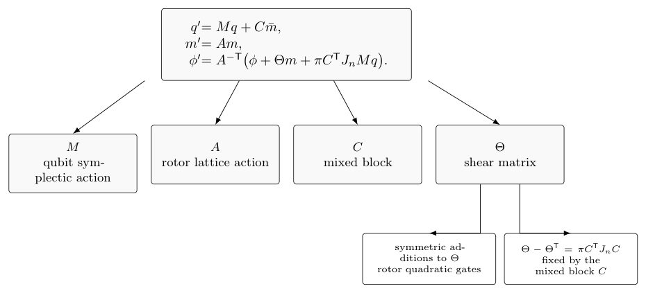
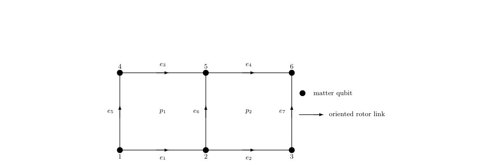
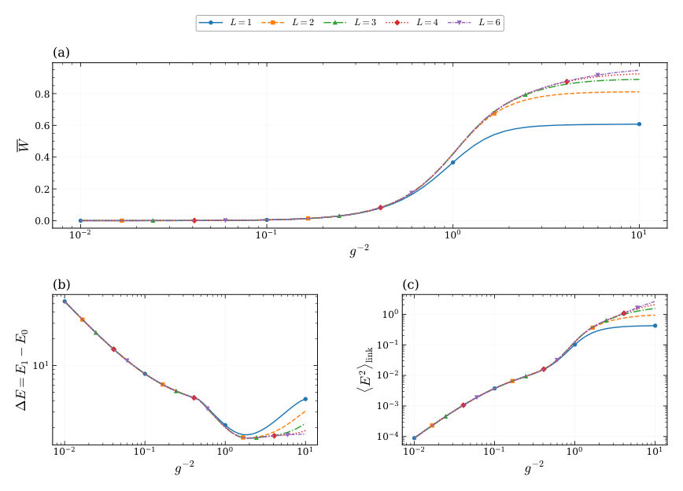
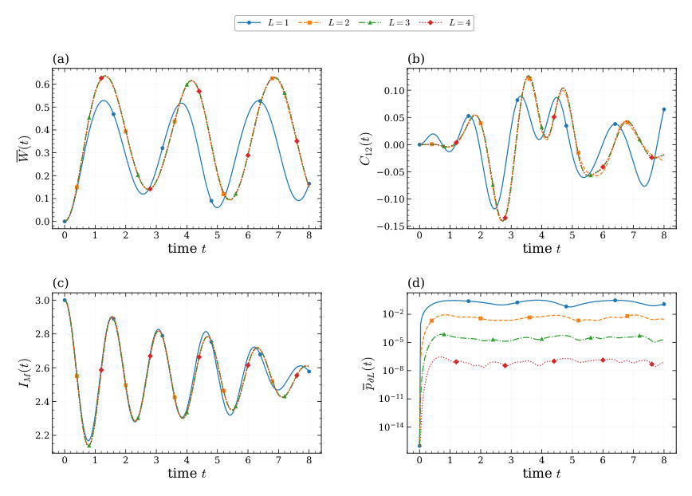
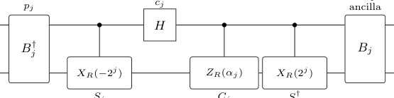
Summary. This paper establishes a novel Clifford theory for quantum systems coupling qubits to quantum rotors, treating the combined system's phase space. The authors classify all possible symmetries and derive the minimal gate sets needed to realize these transformations. This framework is then applied to simulate complex physical processes, including gauge dynamics and quantum Fourier transforms.
Why it may be interesting. It provides a rigorous mathematical framework for controlling complex, hybrid quantum hardware architectures that combine discrete (qubit) and continuous (rotor) degrees of freedom, which is highly relevant for quantum simulation.
Main problem. The paper develops a comprehensive Clifford theory and universal control framework for hybrid quantum registers combining qubits and quantum rotors.
Main result. It classifies all automorphisms of the hybrid phase space and provides explicit finite Clifford circuits for them, achieving universal control by adding minimal non-Clifford terms.
Method. The authors use group theory, Weyl operators, and stabilizer formalism to analyze the commutation relations and structure of the hybrid phase space.
Model / system. The system is a hybrid quantum register consisting of $n$ qubits and $r$ $U(1)$ quantum rotors, whose dynamics are governed by a hybrid phase space $\mathbb{F}_2^{n} imes \mathbb{Z}^r imes \mathbb{T}^r$.
Key observables. The classification of automorphisms, the minimum number of elementary mixed gates required for synthesis, and the fidelity of quantum transformations like controlled-shift operations and Fourier transforms.
Important parameters / regimes. The number of qubits ($n$), the number of rotors ($r$), and the structure of the coupling matrix $C$.
Assumptions / limitations. The classification of automorphisms is directional, implying inherent asymmetries in control capabilities (e.g., rotor parity controlling qubit operations, but not vice versa).
Figures summary. Not specified, but the notes detail the structure of the classification (Theorem 2.3) and the counting of logical instructions for QFT compilation (Table 7).
Paper structure. The paper proceeds by defining the hybrid phase space and Weyl operators, developing the Clifford theory and automorphism classification, establishing universal control conditions, and finally applying this structure to three distinct physical settings: gauge-covariant hopping, phase estimation, and QFTs.
A $U(1)$ quantum rotor pairs a periodic angle with an integer-valued conjugate momentum, and occurs in molecular rotation, superconducting phase-charge circuits, and compact gauge fields. Coupling such a rotor coherently to qubits gives a hybrid register whose control structure is not inherited from either the oscillator-qubit or the qudit case. We develop a Clifford theory, together with a universal-control result, for registers of $n$ qubits and $r$ rotors. We classify all automorphisms of the hybrid phase space $\mathbb{F}_2^{2n}\times\mathbb{Z}^r\times\mathbb{T}^r$ that preserve the Weyl commutation relations, and give an explicit finite Clifford circuit for each one. The classification is directional: rotor momentum parity may control qubit Pauli operations within the Clifford group, while every nonzero qubit-controlled rotor momentum shift is non-Clifford. It also yields normal forms for the mixed qubit-rotor couplings and the exact minimum number of elementary mixed gates needed to synthesize them. Adding a rotor cosine potential and one fixed qubit-rotor conditional phase to the local Clifford operations gives universal control on the full Hilbert space in the strong operator topology. We then apply this structure in three settings: an exact controlled-shift realization of gauge-covariant matter hopping, which is necessarily non-Clifford; rotor phase estimation with direct angle readout and probe optimization under momentum-support and energy constraints; and finite Fourier transforms on rotor momentum codes, where the one-rotor transform for $d=2^s$ compiles into $O(s)$ momentum-selective and controlled-shift instructions and each cross-register Fourier factor is implemented by one quadratic rotor Clifford gate.
Authors: Tetsuya Iwasaki, Hosho Katsura
Type: theory · Category: strongly correlated electrons · PDF: https://arxiv.org/pdf/2608.20269v1
Analysis basis: full PDF text, analyzed in chunks
Topic relevance: analog quantum simulation 3/5 · Keldysh / 2PI / non-Gaussian methods 1/5
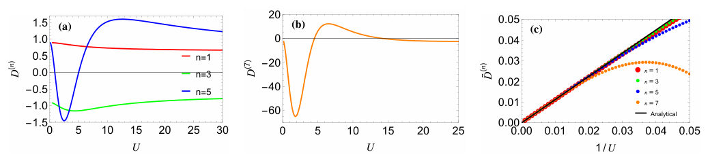
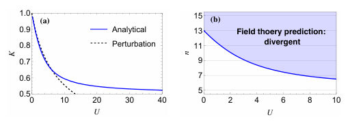
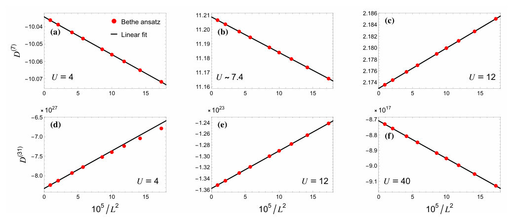
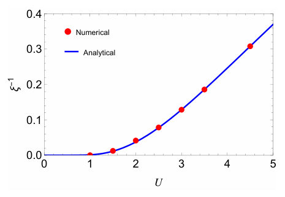
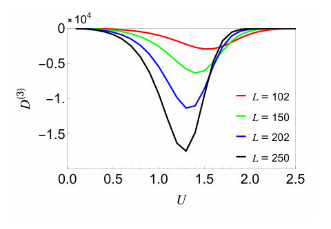
Summary. This work calculates nonlinear Drude weights in the 1D Hubbard model to study non-linear transport. By comparing exact Bethe-ansatz results with low-energy field theory, the authors reveal a significant discrepancy: the exact results remain finite, contradicting theoretical predictions of divergence due to Umklapp terms. This clarifies the limitations of standard low-energy descriptions for higher-order transport coefficients.
Why it may be interesting. The discrepancy between exact numerical results and low-energy field theory predictions for higher-order transport coefficients highlights the limitations of conventional effective theories when describing non-linear quantum dynamics.
Main problem. The paper investigates nonlinear Drude weights (NLDWs) in the one-dimensional repulsive Hubbard model to characterize ballistic transport beyond the linear-response regime.
Main result. The exact Bethe-ansatz calculations consistently show that NLDWs remain finite in the thermodynamic limit, contradicting the predictions of the low-energy effective field theory, which often predicts divergence due to Umklapp interactions.
Method. The study combines exact Bethe-ansatz calculations with low-energy effective field theory techniques, utilizing bosonization, strong-coupling expansions, and finite-size scaling analysis.
Model / system. The primary system is the one-dimensional (1D) repulsive Hubbard model, analyzed at quarter and half fillings. The low-energy physics is described by a spin-charge separated Tomonaga-Luttinger liquid (TLL) theory.
Key observables. Nonlinear Drude Weights, $D(n)$; asymptotic behavior near critical points; finite-size scaling functions.
Important parameters / regimes. Interaction strength ($U$), hopping amplitude ($t$), filling fraction ($ u$), and system length ($L$).
Assumptions / limitations. The analysis relies on the Bethe ansatz solution for exact results and employs bosonization/CFT techniques for the effective field theory description.
Figures summary. Figures illustrate the interaction dependence of NLDWs at quarter filling, and show finite-size scaling data for NLDWs at both quarter-filling and half-filling, confirming finite values where theory predicts divergence.
Paper structure. The paper proceeds by deriving NLDWs using generalized Kohn formulas, analyzing the strong-coupling expansion at quarter filling, comparing these results against TLL predictions, and finally analyzing finite-size scaling and critical behavior at half filling.
We investigate nonlinear Drude weights (NLDWs) in the one-dimensional repulsive Hubbard model by combining exact Bethe-ansatz calculations with low-energy effective field theory. At quarter filling, we first derive the strong-coupling expansion of the NLDWs and confirm it numerically over a wide range of interaction strength. We then compare the numerical results with the prediction of the Tomonaga-Luttinger liquid (TLL) description including irrelevant perturbations. While band-curvature corrections yield finite contributions to higher-order NLDWs, the Umklapp interaction predicts divergent NLDWs when the order $n$ of the Drude weight exceeds a threshold determined by the TLL parameter. In contrast, finite-size scaling of the exact Bethe-ansatz results indicates that all calculated NLDWs remain finite in the thermodynamic limit, revealing a discrepancy between the exact results and the predictions of the low-energy effective field theory. At half filling, we analyze the finite-size scaling of the NLDWs across the Mott metal-insulator transition. We derive their asymptotic behavior in the insulating phase and propose a hyperscaling ansatz for NLDWs near the critical point, which is verified numerically. Our results clarify the interaction dependence and critical scaling of nonlinear transport coefficients in the one-dimensional Hubbard model and highlight limitations of the conventional low-energy effective description for higher-order transport.
Authors: Hidetsugu Sakaguchi, Boris A. Malomed
Type: theory · Category: quantum gases · PDF: https://arxiv.org/pdf/2608.20282v1
Analysis basis: full PDF text, analyzed in chunks
Topic relevance: analog quantum simulation 3/5 · Keldysh / 2PI / non-Gaussian methods 1/5
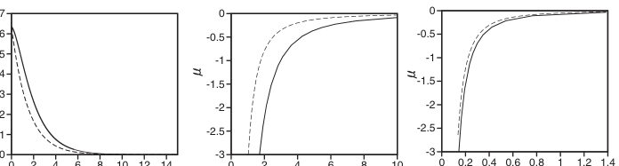
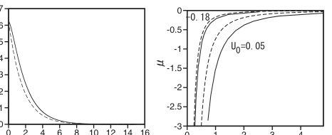
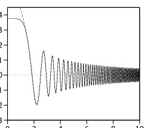
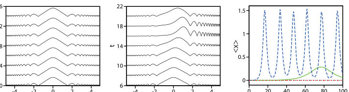
Summary. This article theoretically explores quantum wave functions in systems governed by singular potentials, such as the inverse-square potential. It demonstrates that repulsive nonlinear interactions can prevent quantum collapse in 3D bosonic gases. Furthermore, it shows that potentials growing faster than the harmonic oscillator can support a full spectrum of localized bound states, offering insights into trapping mechanisms in quantum matter.
Why it may be interesting. It provides a comprehensive theoretical framework for understanding how nonlinear interactions and specific potential geometries can stabilize quantum systems against collapse or induce novel localized states, which is crucial for modeling trapped ultracold atoms.
Main problem. The paper investigates the behavior of quantum-mechanical wave functions in the presence of singular potentials, specifically addressing the phenomenon of quantum collapse and the existence of localized bound states.
Main result. The addition of repulsive contact interactions (nonlinear terms) can suppress quantum collapse caused by singular inverse-square potentials, and steep repulsive potentials ($\gamma > 1$) can generate a full spectrum of localized bound states.
Method. The analysis relies on solving the linear and nonlinear Schrödinger and Gross-Pitaevskii equations (GPE) in various dimensions (1D, 2D, 3D) using mean-field approximations and asymptotic analysis.
Model / system. The models include bosonic gases interacting via repulsive contact terms, subjected to singular potentials at $r o 0$ (inverse-square potential) and potentials that grow steeply at $r o \infty$ (expulsive potentials).
Key observables. Ground state wave functions ($\Psi$), chemical potential ($\mu$), binding energy, and the stability of vortex states.
Important parameters / regimes. Singular potential strength ($U_0$), nonlinearity strength ($g$), and the potential steepness parameter ($\gamma$).
Assumptions / limitations. The primary approximations involve the mean-field approximation (MFA) for repulsive interactions, and analyzing the system in the stationary state limit.
Figures summary. Figures illustrate numerical solutions for the radial profile of the wave function ($\chi(r)$) in 3D, and time evolution snapshots showing the stability of quantum droplets.
Paper structure. The paper systematically analyzes the problem in three parts: 1) 3D collapse suppression using the GPE; 2) Analysis of 2D/3D vortex states; and 3) Examination of 1D and 2D bound states under potentials singular at $r o \infty$.
It is known that the attractive singular inverse-square potential gives rise to the critical quantum collapse in the framework of the three-dimensional (3D) linear Schroedinger equation. This article summarizes theoretical results which demonstrate suppression of the collapse, caused by this singular potential, and the creation of the otherwise missing ground state (GS) in a 3D gas of bosonic particles, carrying an electric dipole moment, which are pulled to the central electric charge, with repulsive contact interactions between the particles. In the mean-field approximation, the repulsive interactions are represented by the cubic term in the respective Gross-Pitaevskii (GP) equation. In addition to the GS, excited states with angular momentum are briefly considered too. Another topic considered in the article is 1D and 2D bound states in the linear Schroedinger and GP equations with the repulsive potential, which demonstrates a singularity at r --> infinity. A very recent result is that such a potential, growing faster than the negative harmonic-oscillator potential, produces a full spectrum of counter-intuitive normalizable (localized) bound states. The article puts forward perspectives for further studies of linear and nonlinear bound states existing under the action of the potentials with the singularity at r --> 0 or r --> infinity.
Authors: Augusto Ghiotto, Darian Hall, Yuanqi Lyu, Kohtaro Yamakawa, Sophie Rodehutskors, Corina Dunn, Philip J. W. Moll, John Singleton, Nikola Maksimovic, James G. Analytis
Type: both · Category: strongly correlated electrons · PDF: https://arxiv.org/pdf/2608.20325v1
Analysis basis: full PDF text, analyzed in chunks
Topic relevance: non-equilibrium universality 3/5 · driven-dissipative phase transition 1/5
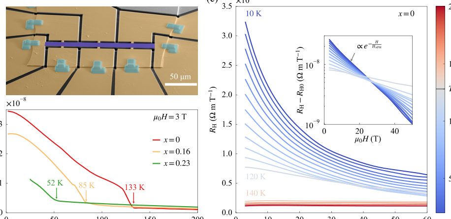
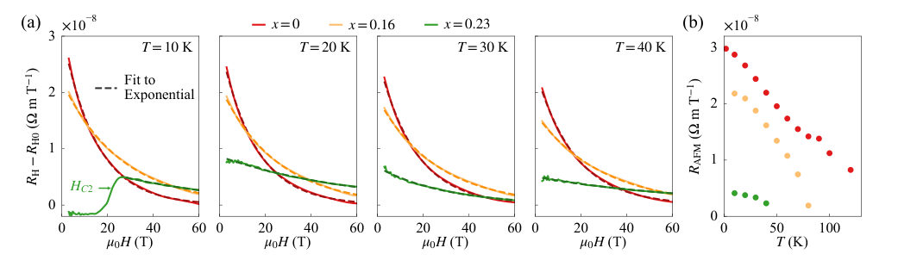
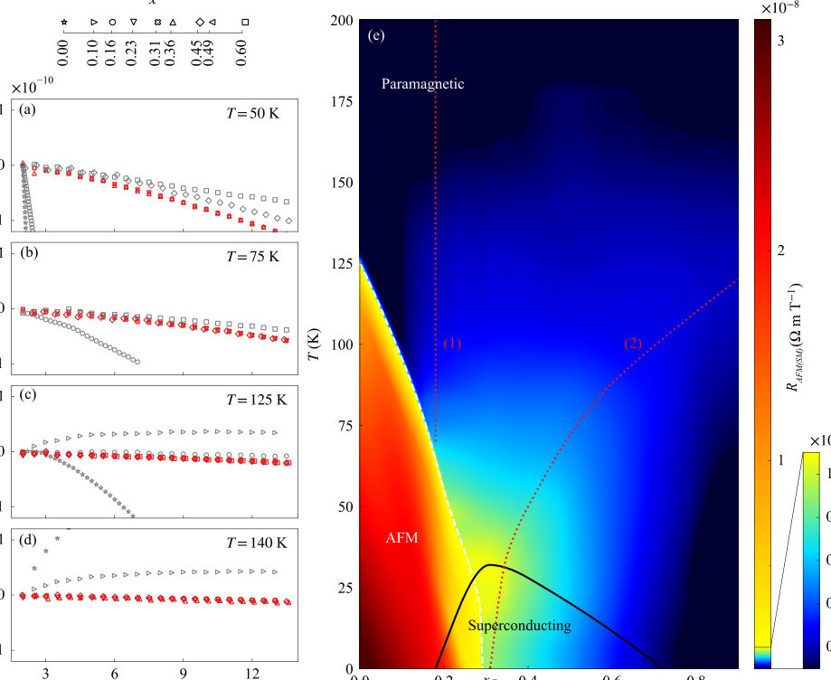
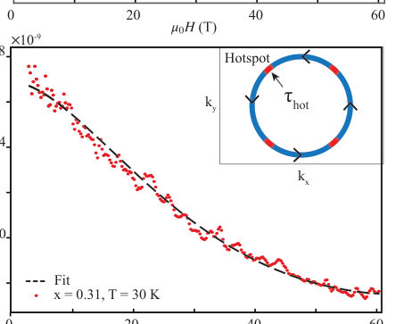
Summary. This work analyzes the strange metal Hall effect in the iron-based superconductor BaFe2(As1-xP_x)2. The researchers find a universal, doping-independent Hall contribution in the strange metal regime, suggesting its origin lies in critical quantum fluctuations. This challenges simple quasiparticle descriptions and links unconventional superconductivity to magnetic quantum criticality.
Why it may be interesting. While focused on strongly correlated electron systems, the concept of universal transport behavior near a quantum critical point, which can be modeled by fluctuations, touches upon non-equilibrium dynamics relevant to open quantum systems.
Main problem. The paper investigates the strange metal Hall effect (SMHE) in iron-based superconductors, aiming to understand the breakdown of the conventional quasiparticle picture in these materials.
Main result. A doping-independent contribution to the Hall effect, termed the SMHE, is observed in a fan-shaped region above a quantum critical point, suggesting an origin linked to critical fluctuations rather than simple Fermi surface reconstruction.
Method. The study combines electrical transport measurements (Hall effect) across varying doping and temperature with theoretical modeling, including comparisons to Fermi surface reconstruction models and 'hotspot' models.
Model / system. The physical system is the iron-based superconductor BaFe2(As1-xP_x)2. The analysis compares experimental data to theoretical models like the Shockley-Chambers integral and a 'hotspot' model to explain the magnetotransport properties.
Key observables. Electrical Hall coefficient (R_H), resistivity ($ ho$), and their dependence on temperature (T), magnetic field (H), and doping (x).
Important parameters / regimes. Doping level (x), temperature (T), magnetic field (H), and the proximity to a putative quantum critical point (QCP).
Assumptions / limitations. The SMHE is assumed to originate from critical fluctuations associated with an antiferromagnetic critical point, contrasting with the behavior predicted by simple Fermi surface reconstruction models.
Figures summary. Figures illustrate R_H vs. T and R_H vs. H for various dopings, showing the doping-independent SMHE in the quantum critical fan, and comparing model fits (Turning Point/Hotspot) to experimental data.
Paper structure. The paper progresses by establishing the anomalous transport properties (SMHE) in the superconducting phase, contrasting this universal behavior with the doping-dependent behavior near the antiferromagnetic state, and finally proposing critical fluctuations as the underlying mechanism.
The unusual transport properties of strange metals point to the breakdown of the quasiparticle picture, the understanding of which remains one of the most vexing problems in physics. Here, we report investigations of the electrical Hall effect of the strange metal superconductor BaFe$_2$(As$_{1-x}$P$_x$)$_2$. We show that a doping-independent contribution to the Hall effect exists within a fan shaped region above a putative quantum critical point. This `strange metal Hall' contribution echoes many of the properties of the antiferromangetic Hall response, but attains universal properties that distinguish it from the effects of Fermi surface reconstruction. This is consistent with an underlying origin connected to the presence of critical fluctuations, tying it to observations of $T$-linear resistivity and the appearance of unconventional superconductivity.
Authors: Michal A. Sterzel, Marko J. Rančić
Type: both · Category: numerical methods · PDF: https://arxiv.org/pdf/2608.19789v1
Analysis basis: full PDF text, analyzed in chunks
Topic relevance: methods for driven-dissipative 3/5 · analog quantum simulation 1/5
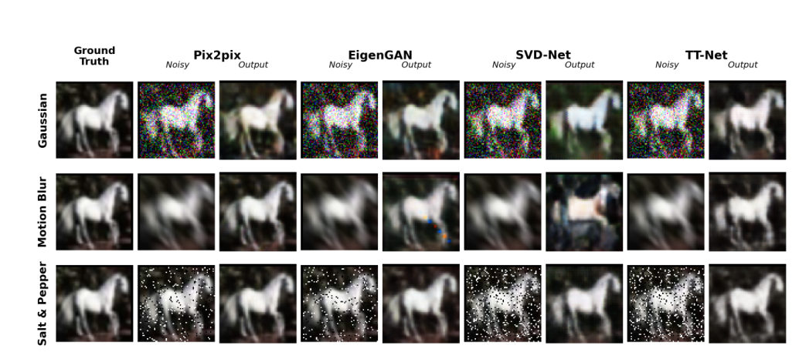
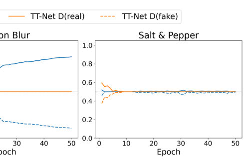
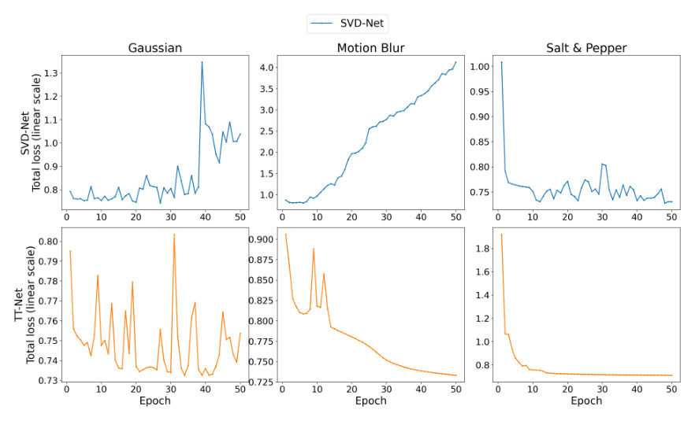
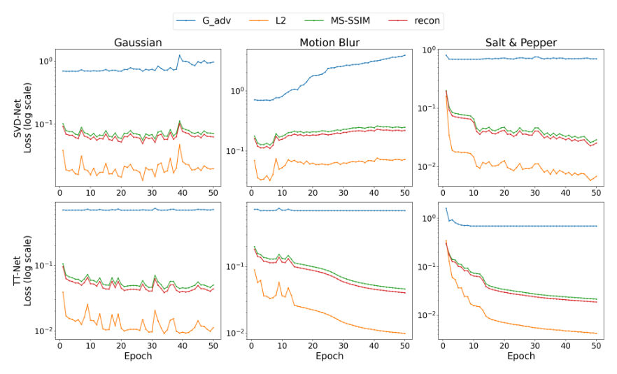
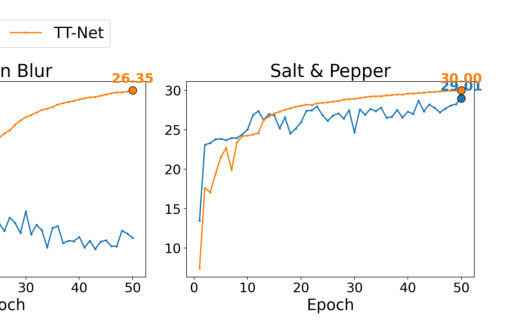
Summary. This work introduces TT-Net, which upgrades a GAN-based image denoising framework by replacing per-channel SVD with a cross-channel two-cut tensor-train decomposition. The results show that this quantum-inspired structural enhancement significantly improves denoising performance across various noise types compared to existing methods. It demonstrates the practical utility of tensor network tools as powerful feature extractors in deep learning.
Why it may be interesting. While applied to image processing, the core technique—using tensor networks (TT-decomposition) to model correlations across feature channels—is directly analogous to methods used in quantum many-body physics for representing quantum states, making it relevant for developing novel feature filters for quantum data analysis.
Main problem. The paper addresses image denoising by improving the feature extraction process within Conditional GANs, moving beyond standard per-channel filtering.
Main result. The proposed TT-Net significantly outperforms SVD-Net and other state-of-the-art methods on multiple noise types, demonstrating that cross-channel information access via tensor-train decomposition enhances denoising quality.
Method. It replaces the per-channel Singular Value Decomposition (SVD) used in SVD-Net with a two-cut tensor-train decomposition (TT-Net) within the GAN architecture.
Model / system. The model is a Conditional GAN used for image denoising on the CIFAR-10 dataset. The core comparison is between SVD-Net (using per-channel SVD) and TT-Net (using two-cut tensor-train decomposition).
Key observables. PSNR and SSIM scores across Gaussian, motion blur, and salt-and-pepper noise; training dynamics of the adversarial loss term.
Important parameters / regimes. The reconstruction loss weights ($\delta=0.84$) and the fixed batch size (32) are key parameters used for comparison.
Assumptions / limitations. The primary assumption tested is that generalizing the decomposition from a single SVD cut to a multi-cut tensor-train decomposition provides superior access to cross-channel information for denoising.
Figures summary. Figures show qualitative visual comparisons of denoised images, and training dynamics plots illustrate the stabilization of the adversarial loss term in TT-Net compared to SVD-Net.
Paper structure. The paper introduces the problem, details the TT-Net modification over SVD-Net, presents controlled comparisons across various noise types using PSNR/SSIM, analyzes the training dynamics of the loss components, and concludes that cross-channel access is beneficial.
Developed as a workhorse for classical simulations of quantum algorithms and quantum many-body systems, Tensor Network methods have entered the scientific mainstream in quantum physics. Among various types of tensor networks, Tensor Trains (commonly know as Matrix Product States in the quantum computing community) have already found applications in machine learning. These methods often rely on a powerful linear algebra tool called the Singular Value Decomposition (SVD). Several conditional GAN architectures for image denoising incorporate SVD as a single-cut decomposition step applied to generator feature maps. In this work we introduce TT-Net, which replaces the per-channel SVD denoising block with a two-cut tensor-train decomposition capable of accessing cross-channel information directly, a capability absent from contemporary alternatives. In a controlled comparison differing only in this decomposition mechanism, TT-Net outperforms SVD-Net on PSNR and SSIM across all three noise types tested (Gaussian, motion blur, and salt-and-pepper), supporting the hypothesis that cross-channel access improves denoising quality. Training-dynamics analysis further shows that TT-Net's adversarial loss term consistently saturates to a stagnant state across all three noise types, more so than SVD-Net's, while reconstruction quality continues to improve regardless, raising an open question about the adversarial component's contribution that this work identifies but does not resolve. Furthermore, for Gaussian noise our method outperforms both the EigenGAN and the state of the art Pix2pix method which does not assume any linear algebra decompositions and does not retain any linear algebra information. Our manuscript shows how quantum inspired tools can be used as practical real world feature filters for deep learning applications.
Authors: Nico Deshler, Aakash Warke, Michael R. Grace, Amit Ashok, Saikat Guha
Type: theory · Category: other · PDF: https://arxiv.org/pdf/2608.19524v1
Analysis basis: full PDF text, analyzed in chunks
Topic relevance: quantum measurements 3/5
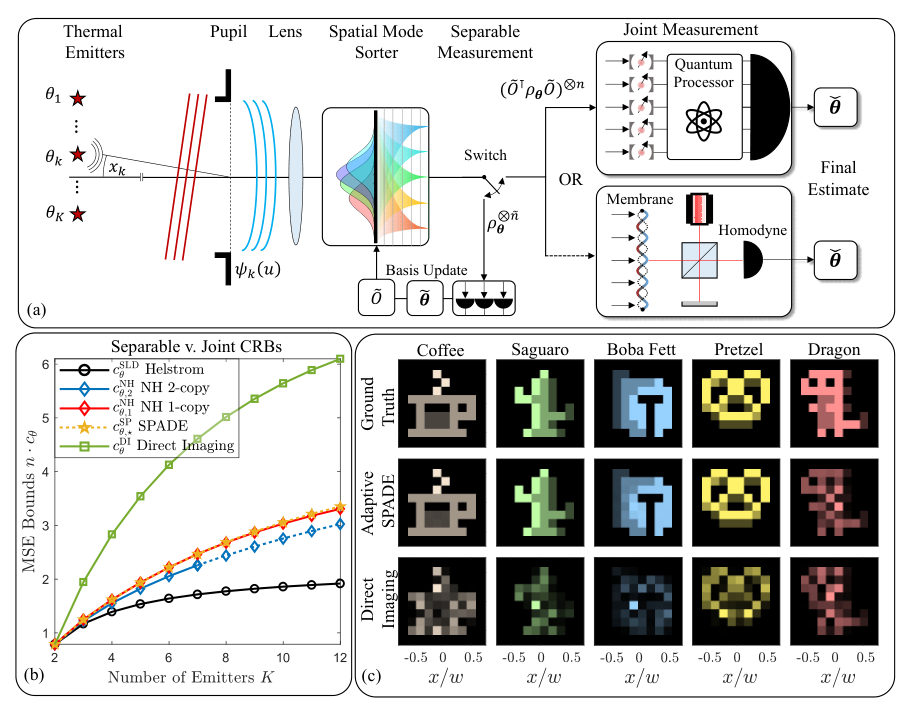
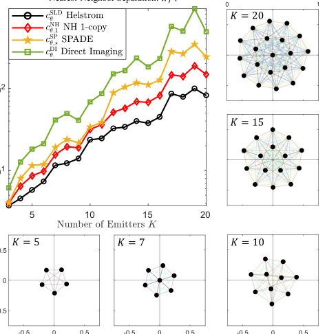
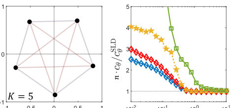
Summary. This paper tackles the challenge of super-resolution imaging by determining the ultimate quantum limit for estimating multiple incoherent light sources. It proves that while separable measurements (like SPADE) are practical, they fall short of the theoretical quantum limit set by the Helstrom bound. The authors propose and analyze joint quantum detection receivers that can asymptotically reach this fundamental quantum limit.
Why it may be interesting. This work provides rigorous quantum information-theoretic tools to analyze measurement limitations in quantum optics, particularly showing how joint measurements can overcome classical separability constraints in imaging.
Main problem. The paper addresses the fundamental quantum limits for simultaneously estimating the brightnesses of multiple, extended, incoherent point emitters below the diffraction limit.
Main result. It demonstrates that joint quantum measurements are necessary to surpass the limits of separable measurements, achieving the ultimate quantum limit set by the Helstrom bound.
Method. The authors derive the Quantum Fisher Information Matrix (QFIM) and analyze the commutation relations of the Symmetric Logarithmic Derivatives (SLDs) to establish the ultimate estimation bound.
Model / system. The model approximates an extended incoherent object as a finite grid of thermal point emitters, whose received state is a Gaussian state parameterized by unknown brightnesses.
Key observables. Quantum Fisher Information Matrix (QFIM), Helstrom bound, Nagaoka-Hayashi (NH) bound, and the Mean-Squared Error (MSE).
Important parameters / regimes. The number of emitters ($K$), the degree of sub-diffraction regime ($\Delta$), and the number of state copies ($n$).
Assumptions / limitations. The analysis assumes the pupil function is inversion-symmetric and that the state is full rank; it also compares the performance of joint vs. separable measurements.
Figures summary. Figures illustrate the comparison of quantum and classical bounds for 1D emitters, and show simulated reconstructions comparing adaptive SPADE measurements against direct imaging for 2D grids.
Paper structure. The paper builds from establishing the physical model and deriving the QFIM, to comparing various estimation bounds (Helstrom vs. NH), and finally articulating two specific joint detection receivers that asymptotically achieve the Helstrom bound.
Resolving extended incoherent objects below the diffraction limit poses an application-rich imaging challenge whose solution may enable a new generation of observational instruments and capabilities. In this work, we invoke a practical model for general imaging by approximating an arbitrary extended incoherent object as a finite grid of thermal point emitters parameterized by their brightnesses. We derive the quantum Fisher information matrix (QFIM) for simultaneous brightness estimation and show that the symmetric logarithmic derivatives weakly commute, indicating that the Helstrom bound furnishes the ultimate quantum limit on the estimation error for incoherent imaging. Furthermore, for deeply sub-diffraction scenes, we find numerical evidence of a gap between the Nagaoka-Hayashi (NH) bound and the Helstrom bound. This gap reveals that separable measurements, though more experimentally accessible, are insufficient to reach the quantum limit, and points to the prospective advantage of joint measurements acting on multiple state copies. Additionally, we show that spatial mode-demultiplexing (SPADE) often saturates the NH bound solidifying its status as a near-optimal separable measurement strategy that significantly outperforms direct imaging. Finally, we articulate two joint detection receivers implemented with bona fide quantum resources that asymptotically achieve the Helstrom bound.
Authors: Liu Yang, Jiadu Lin, Qing-Dong Jiang
Type: theory · Category: other · PDF: https://arxiv.org/pdf/2608.19336v1
Analysis basis: full PDF text, analyzed in chunks
Topic relevance: Tavis-Cummings & cavity-many-emitter 2/5 · analog quantum simulation 2/5 · Keldysh / 2PI / non-Gaussian methods 1/5 · correlated / nonlocal dissipation 1/5 · driven-dissipative phase transition 1/5 · interference shaping light 1/5 · methods for driven-dissipative 1/5
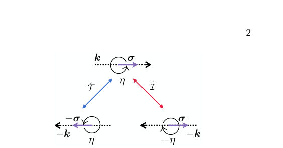
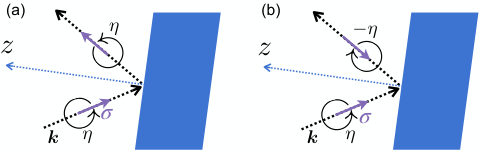
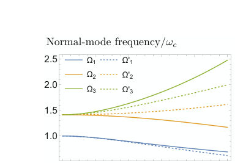
Summary. This paper develops a generalized framework for light-matter interaction Hamiltonians when the photonic vacuum lacks inversion or time-reversal symmetry. By applying the Power-Zienau-Woolley transformation, the authors derive specific symmetry-breaking terms for chiral vacuums. These terms predict measurable spectral shifts in embedded atoms and molecules, advancing the theory of chiral cavity QED.
Why it may be interesting. This work provides a general, rigorous framework for understanding how fundamental symmetries of the electromagnetic vacuum directly modify the fundamental light-matter coupling Hamiltonian in cavity QED settings.
Main problem. The conventional multipolar Hamiltonian is insufficient for describing light-matter interactions when the surrounding photonic vacuum breaks inversion or time-reversal symmetry.
Main result. The symmetry breaking leads to new terms in the Hamiltonian, specifically an inversion-breaking self-energy in spatial-chiral vacuums and a Zeeman-like term in temporal-chiral vacuums.
Method. The authors use the Power-Zienau-Woolley transformation to derive the modified multipolar Hamiltonians for idealized chiral photonic environments.
Model / system. The analysis uses model systems such as trapped hydrogen-like atoms and charged harmonic oscillators coupled to spatially or temporally chiral cavities.
Key observables. Characteristic spectral shifts in embedded matter, including a second-order energy shift $\Delta E^{(2)}_{nS}$ and angular-momentum-dependent frequency shifts.
Important parameters / regimes. The coupling strength ($g/\omega_c$) and the nature of the vacuum symmetry ($\mathcal{I}$ or $\mathcal{T}$ breaking).
Assumptions / limitations. The analysis relies on approximations, such as the long-wavelength limit and the dipole approximation for the Zeeman correction.
Figures summary. Figure 2 illustrates the mirror configurations for spatial-chiral and temporal-chiral vacuums, while Figure 3 compares normal-mode frequencies showing the effect of the Zeeman correction as coupling strength increases.
Paper structure. The paper first establishes the need for modification due to vacuum symmetry breaking, derives the general PZW Hamiltonians for the two chiral cases, and then applies these to model systems (hydrogen atom, harmonic oscillator) to calculate observable spectral shifts.
We show that the conventional multipolar Hamiltonian is qualitatively modified when the photonic vacuum breaks inversion or time-reversal symmetry. By explicitly applying the Power-Zienau-Woolley transformation, we derive the resulting multipolar Hamiltonians for two idealized chiral photonic environments: a spatial-chiral vacuum, which breaks inversion symmetry, and a temporal-chiral vacuum, which breaks time-reversal symmetry. In the spatial-chiral case, the transformation generates an inversion-breaking self-energy, whereas in the temporal-chiral case it produces an additional Zeeman-like energy. Using a trapped hydrogen-like atom and a charged harmonic oscillator in cavities as minimal examples, we show that these symmetry-dependent terms lead to characteristic spectral shifts. Our work provides a general framework for describing light-matter interactions in chiral quantum electrodynamics and identifying the associated symmetry-dependent effects on cavity-embedded atoms, molecules, and quantum materials.
Authors: Jonas Jäger, Yaroslav Khmelnitskiy, Paolo Braccia, Artur Miroszewski, Diego García-Martín, M. Cerezo, Piotr Czarnik
Type: theory · Category: quantum information and computing · PDF: https://arxiv.org/pdf/2608.19306v1
Analysis basis: full PDF text, analyzed in chunks
Topic relevance: methods for driven-dissipative 2/5 · quantum measurements 2/5 · Keldysh / 2PI / non-Gaussian methods 1/5 · analog quantum simulation 1/5 · correlated / nonlocal dissipation 1/5 · driven-dissipative phase transition 1/5
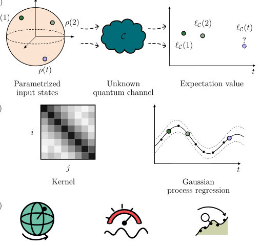
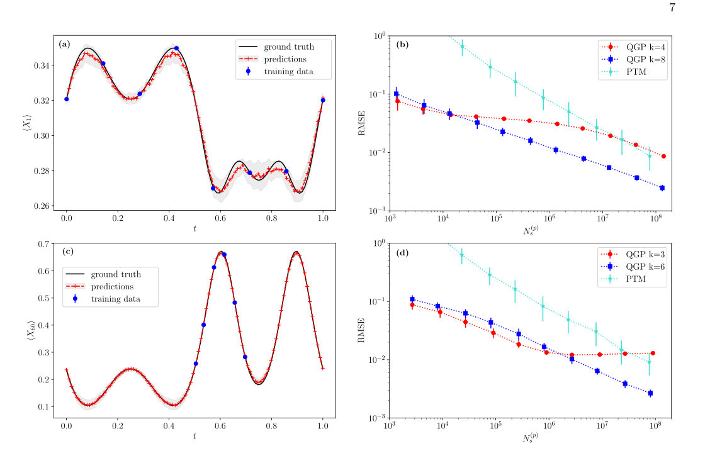
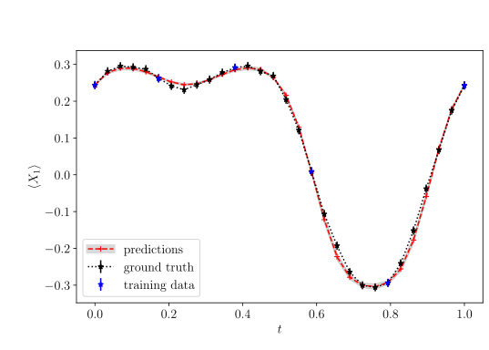
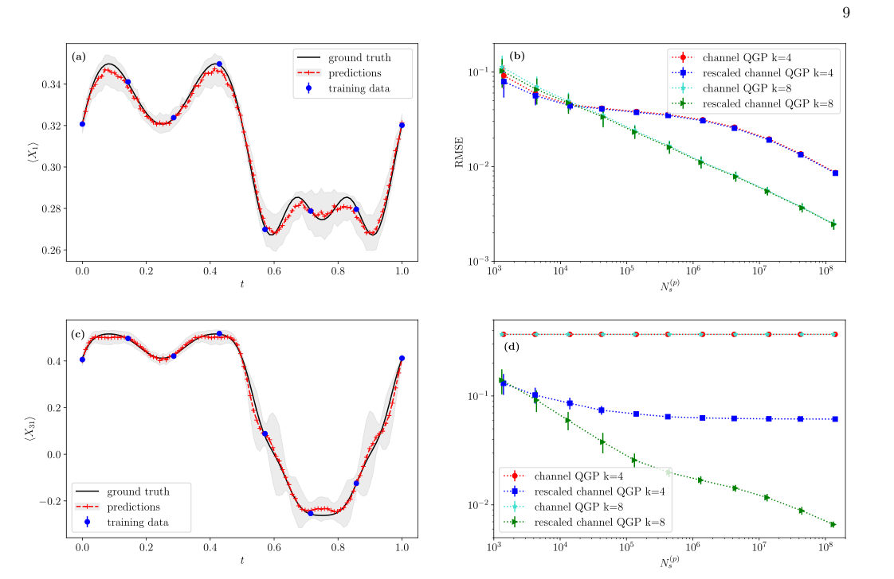
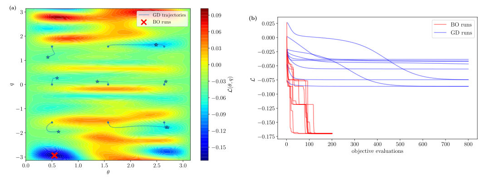
Summary. This paper extends Quantum Gaussian Process (QGP) regression to model unknown quantum channels, moving beyond simple unitary evolution. The authors derive a corrected kernel using an empirical Bayes heuristic to overcome limitations in large-scale systems. This allows for robust prediction of quantum channel outputs even with limited experimental measurements.
Why it may be interesting. This work provides a powerful, scalable Bayesian inference tool (QGP) for characterizing unknown, realistic open quantum system dynamics, which is crucial for quantum process tomography and quantum control.
Main problem. The paper addresses the challenge of predicting the expectation value of a Pauli observable after an unknown quantum evolution (channel) using limited measurement data.
Main result. The authors successfully extend Quantum Gaussian Process (QGP) regression beyond unitary dynamics to general quantum channels, proposing a rescaled kernel heuristic that restores learnability for large systems.
Method. They employ QGP regression, deriving the process prior using the Lebesgue measure over quantum channels, and introduce an empirical Bayes heuristic to correct for kernel suppression in large subsystems.
Model / system. The system involves an unknown quantum channel $C$ acting on input states $ ho(t)$, and the prediction target is the expectation value $ ext{Tr}[C( ho(t))O]$. The framework is tested on both local and global channel dynamics.
Key observables. Expectation values of Pauli observables ($\ell_C(t)$), and the resulting predicted mean and variance from the QGP.
Important parameters / regimes. System size (up to 64 qubits), shot budget ($N$), and the learnable scale parameter introduced by the heuristic.
Assumptions / limitations. The standard Lebesgue prior over quantum channels is too broad, necessitating the empirical Bayes heuristic to replace the dimensional factor with a learnable scale parameter.
Figures summary. Figure 1 illustrates the QGP regression setup for quantum channels, showing the kernel encoding input state correlations and the applicability beyond simple regression tasks like state preparation.
Paper structure. The paper builds from known QGP results for unitary dynamics to the general case of quantum channels. It derives the QGP prior, identifies the scaling issue with the Lebesgue measure, proposes the empirical Bayes correction, and validates the method on large-scale simulations and noisy dynamics.
Given a set of input states, we consider the task of predicting the expectation value of a Pauli observable at the output of an unknown quantum evolution, using only a limited number of measurements. Recently, quantum Gaussian process (QGP) regression was introduced for this task across various classes of unitary evolution. Here, we extend the QGP framework beyond unitary dynamics. In particular, we prove convergence of the channel's outputs to a QGP and derive the associated closed-form kernel under a uniform (Lebesgue measure) prior over quantum channels. The kernel's dimensional factor, however, dictates the required observation precision. While manageable when the channel and observable are restricted to small subsystems, exponential suppression precludes learning when the subsystem grows extensively with the system size. Since the Lebesgue prior is overly broad for many applications, we propose an empirical Bayes heuristic that replaces the dimensional factor with a learnable scale parameter while retaining the kernel's state-overlap correlation structure. In numerical simulations of up to 64 qubits, channel QGP regression with the Lebesgue kernel exhibits a strong inductive bias for local channels, enabling faithful extrapolation. For global 64-qubit channels, the rescaled kernel restores learnability, with predictions improving systematically with the shot budget. Results from a noisy quantum computer further demonstrate the robustness of QGP regression under experimental conditions. Beyond regression, we validate QGPs as Bayesian-optimization surrogates for state preparation under noisy XXZ dynamics.
Authors: Ro Jefferson, Shradha Ramakrishnan
Type: theory · Category: disordered systems and neural networks · PDF: https://arxiv.org/pdf/2608.19331v1
Analysis basis: full PDF text, analyzed in chunks
Topic relevance: Keldysh / 2PI / non-Gaussian methods 2/5 · analog quantum simulation 2/5 · methods for driven-dissipative 1/5
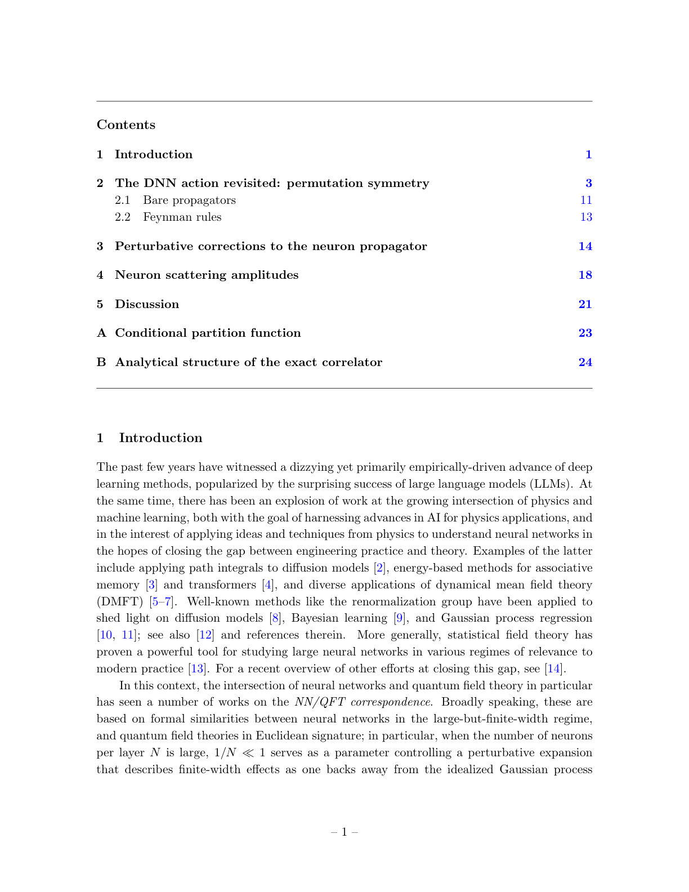
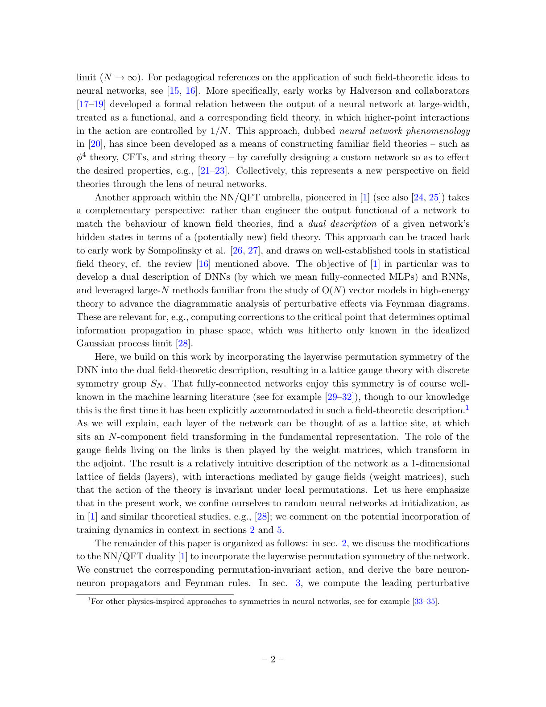
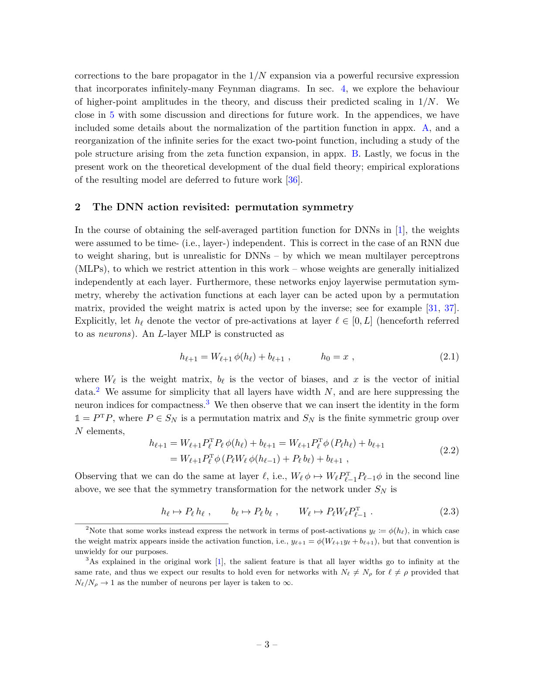
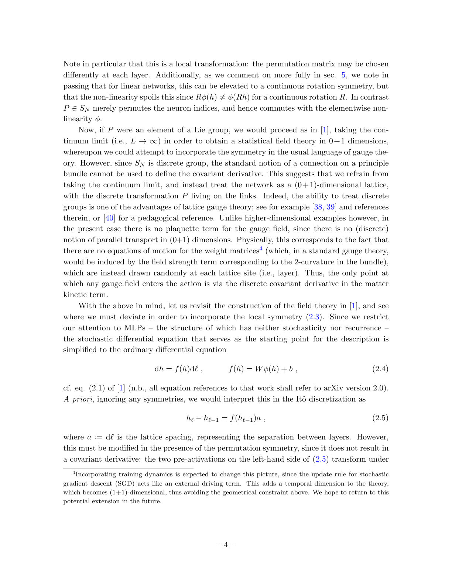
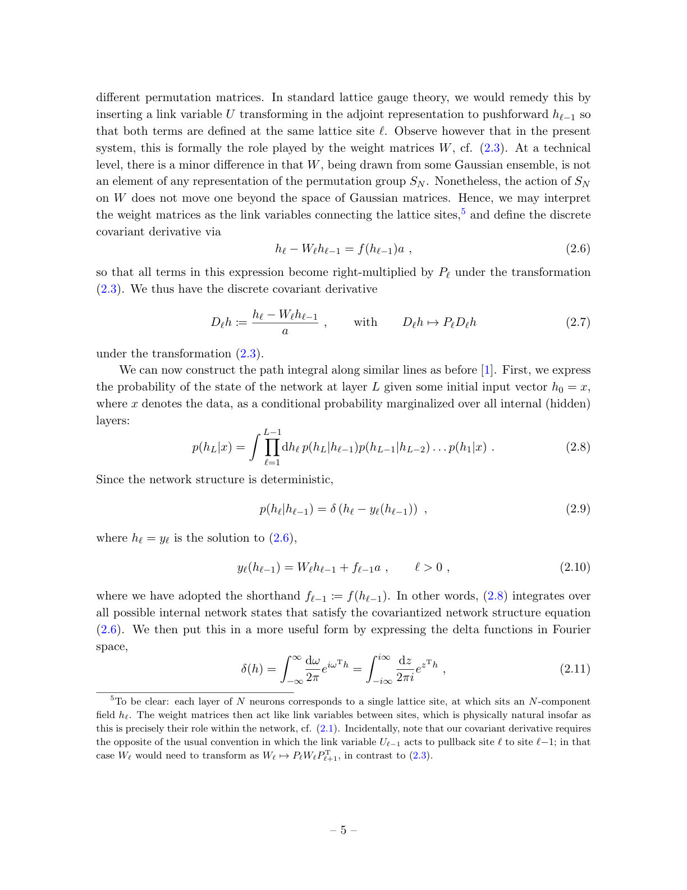
Summary. This work reformulates deep neural networks as a $(0+1)$-dimensional lattice gauge theory by incorporating the layerwise permutation symmetry. Using techniques from quantum field theory, the authors compute propagators and scattering amplitudes in the large-$N$ limit. This provides a powerful, rigorous field-theoretic framework for studying information flow and correlations within deep learning models.
Why it may be interesting. The connection between the discrete symmetries of neural networks and the mathematical machinery of lattice gauge theory provides a novel, field-theoretic lens for understanding complex information processing dynamics.
Main problem. The paper modifies the NN/QFT duality to incorporate the layerwise permutation symmetry of deep neural networks, treating the network as a lattice gauge theory.
Main result. They develop a field-theoretic framework to compute the neuron-neuron propagator and scattering amplitudes in the perturbative expansion in $1/N$, providing insights into information propagation.
Method. The methodology involves adapting lattice gauge theory concepts to a discrete symmetry group ($S_N$), calculating the partition function via path integrals, and performing large-$N$ expansions.
Model / system. The model is a deep neural network (MLP) treated as a $(0+1)$-dimensional lattice gauge theory, where layers are sites and weight matrices act as link variables.
Key observables. Neuron-neuron propagator, layer variance evolution, neuron scattering amplitudes, and correlation functions.
Important parameters / regimes. Network width ($N$), layer index ($\ell$), and the large-$N$ limit ($1/N$ expansion).
Assumptions / limitations. The analysis is restricted to random networks at initialization, and the continuum limit is avoided due to the discrete nature of the symmetry.
Paper structure. The paper progresses from establishing the lattice gauge theory formulation based on $S_N$ symmetry, through the calculation of the partition function using auxiliary fields, and finally to developing the perturbative machinery for computing propagators and correlation functions.
We modify the NN/QFT duality [1] to incorporate the layerwise permutation symmetry of the network, resulting in a $(0\!+\!1)$-dimensional lattice gauge theory, in which each layer of $N$ neurons acts as an $N$-component lattice site, and the weight matrices play the role of gauge fields living on the links. In this framework, we compute the tree-level neuron-neuron propagator which describes the evolution of layer variance in the network, and develop the Feynman diagram machinery to compute interactions in the perturbative expansion in $1/N$. In particular, we obtain a recursive expression for all corrections to the exact propagator at $O(1)$, representing statistical fluctuations in the ensemble of networks, including infinitely-many loop diagrams mediating the interactions from previous layers. We also present a preliminary analysis of neuron scattering amplitudes that contribute order-by-order in $1/N$, which provides a field-theoretic framework for studying higher-point correlations, and by extension information propagation, in deep networks. We remark on some interesting directions for future work at the intersection of neural networks and quantum field theory.
Authors: Davide Barbiero, Jiří J. L. Vaníček
Type: theory · Category: other · PDF: https://arxiv.org/pdf/2608.20075v1
Analysis basis: full PDF text, analyzed in chunks
Topic relevance: Keldysh / 2PI / non-Gaussian methods 2/5 · methods for driven-dissipative 2/5 · quantum measurements 1/5
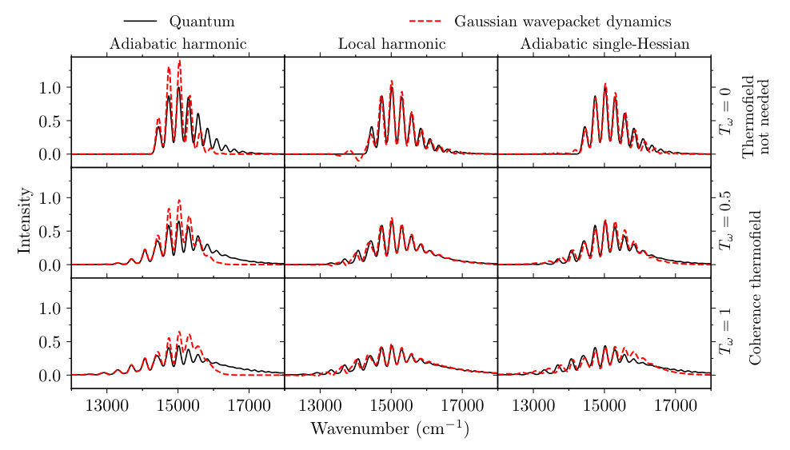
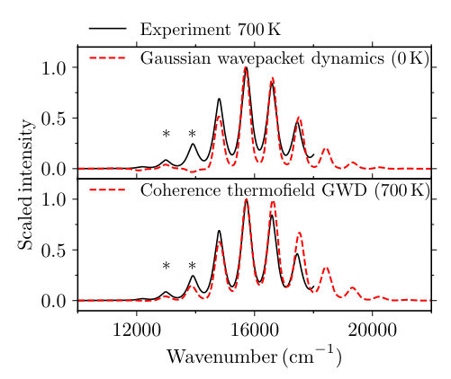
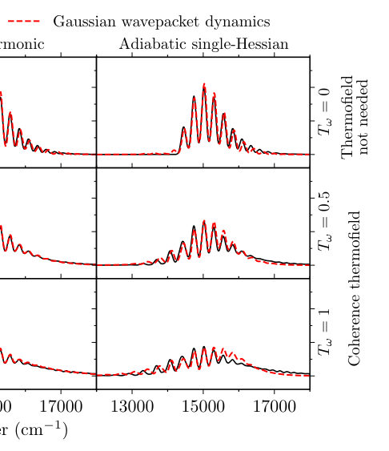
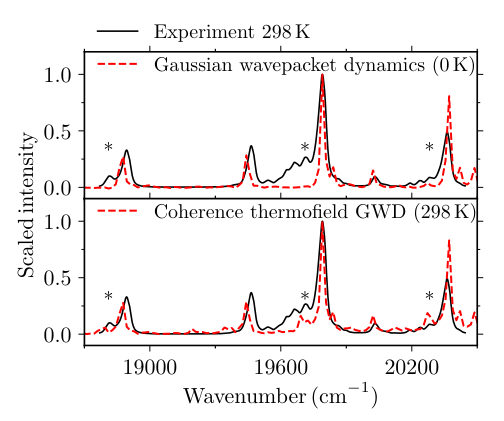
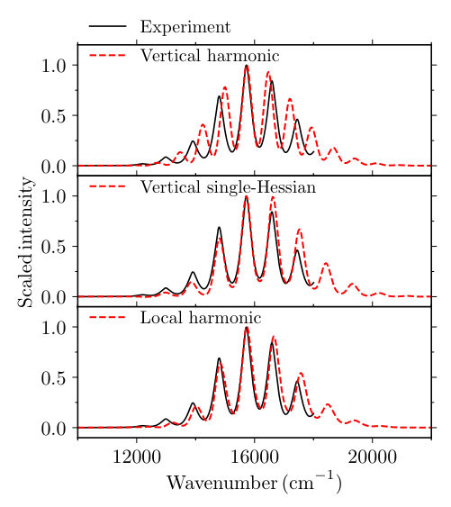
Summary. This paper introduces a novel computational method combining coherence thermofield dynamics and the single-Hessian approximation to simulate vibronic spectra of polyatomic molecules at finite temperatures. It demonstrates that this approach accurately captures temperature effects like hot bands while maintaining computational efficiency by reusing a single zero-temperature trajectory. The method is successfully applied to compute spectra for several benchmark molecules.
Why it may be interesting. This work provides a computationally efficient and accurate theoretical tool for calculating temperature-dependent spectra, which is crucial for understanding molecular dynamics and energy transfer in condensed phases.
Main problem. The paper addresses the challenge of simulating low- to medium-resolution vibronic spectra of weakly anharmonic polyatomic molecules at nonzero temperatures.
Main result. The proposed single-Hessian coherence thermofield Gaussian wavepacket dynamics method successfully captures temperature-dependent spectral features like hot bands and broadening with high accuracy.
Method. The core method combines coherence thermofield dynamics with the single-Hessian approximation to propagate a Gaussian wavepacket in an augmented configuration space.
Model / system. The method is tested on polyatomic molecules, validated using Morse systems, and applied to compute spectra for naphthalene, aminocoumarin C450, phenyl radical, and the photoelectron spectrum of SeO2.
Key observables. Absorption cross-section $\sigma(\omega)$, photoelectron spectra, and vibronic spectra intensity vs. wavenumber ($ ext{cm}^{-1}$).
Important parameters / regimes. Nonzero temperatures (e.g., 700 K), anharmonicity levels, and the choice of reference Hessian.
Assumptions / limitations. The method relies on the single-Hessian approximation, the electric dipole approximation, the first-order time-dependent perturbation theory, and the Condon approximation.
Figures summary. Figures compare spectra from various methods (adiabatic harmonic, local harmonic, single-Hessian GWD) for molecules like BaS, SeO2, and naphthalene, demonstrating the single-Hessian method's superior performance across different temperatures.
Paper structure. The paper introduces the theoretical framework, validates it using simple models (Morse), compares its results against established methods (adiabatic harmonic, local harmonic) across varying temperatures, and applies it to several complex molecular systems (naphthalene, SeO2, etc.).
By combining coherence thermofield dynamics with the single-Hessian approximation, we enable simulations of low- to medium-resolution vibronic spectra of weakly anharmonic systems at nonzero temperatures, at negligible additional cost relative to zero-temperature calculations. Single-Hessian coherence thermofield Gaussian wavepacket dynamics is exact in any harmonic potential, provided that the reference Hessian is that of the final surface. When applied to Morse systems of increasing anharmonicity and varying temperature, this method successfully captures excited-state anharmonicity and key temperature-dependent spectral features, including hot bands and broadening. By combining the method with on-the-fly ab initio dynamics, we demonstrate its utility by computing the absorption spectra of naphthalene, aminocoumarin C450, and phenyl radical, and the photoelectron spectrum of SeO$_{2}^{-}$ . Within the ab initio single-Hessian approximation, after the zero-temperature spectrum is obtained at the cost of classical molecular dynamics (on the order of hours), all nonzero-temperature spectra are computed in seconds.
Authors: Gary Kapilevich
Type: theory · Category: other · PDF: https://arxiv.org/pdf/2608.19458v1
Analysis basis: full PDF text, analyzed in chunks
Topic relevance: Keldysh / 2PI / non-Gaussian methods 2/5 · analog quantum simulation 2/5 · quantum measurements 1/5
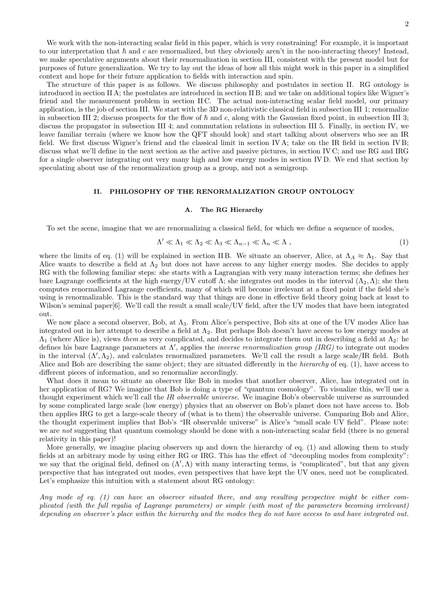
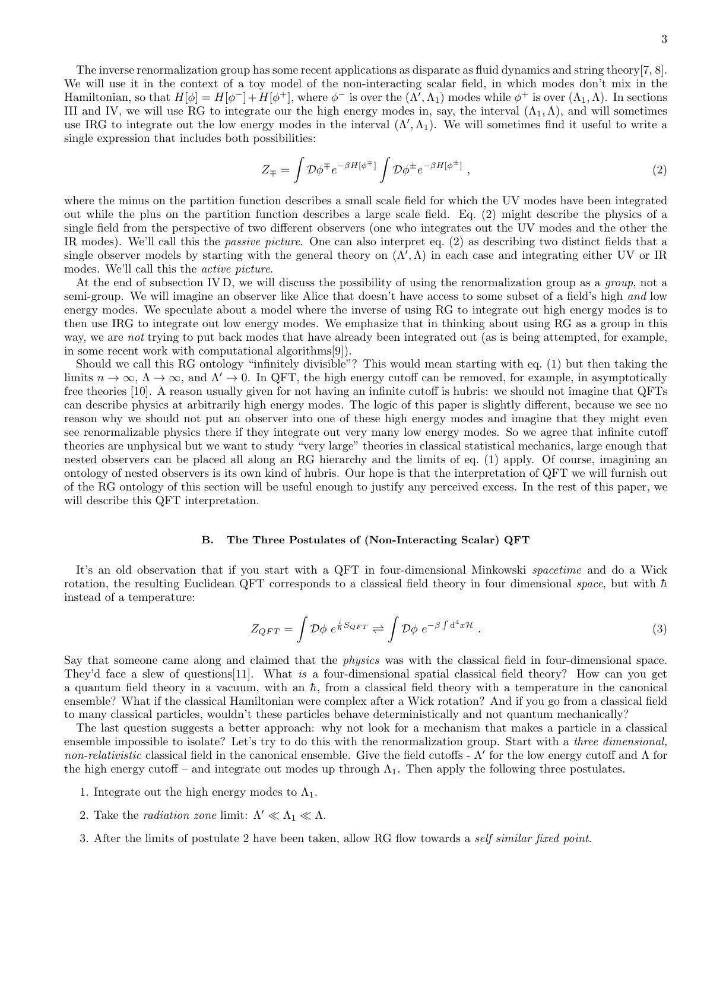
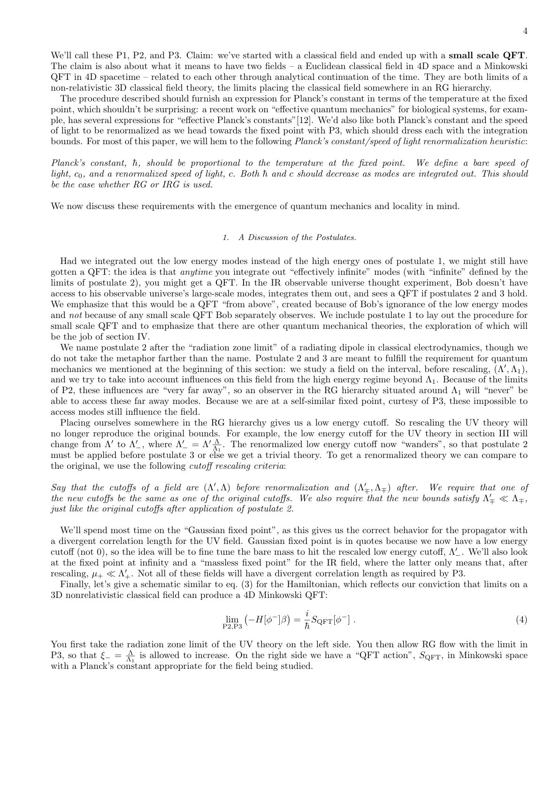
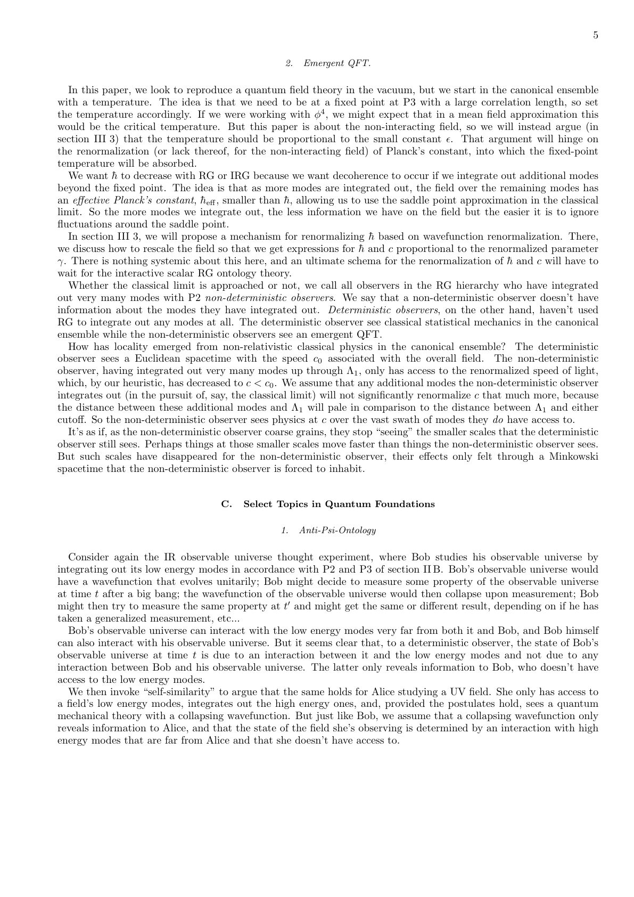
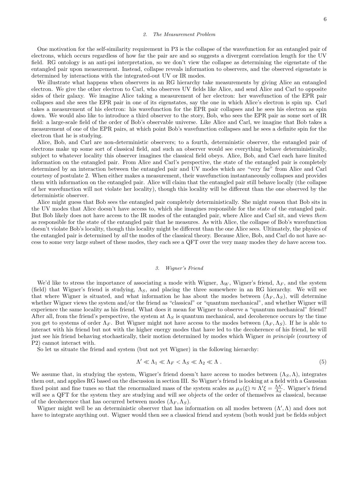
Summary. This theoretical paper proposes a novel, realist interpretation of QFT based on the Renormalization Group. It uses a classical scalar field toy model to show how an observer integrating out different energy scales can perceive an emergent QFT. The work is significant for its attempt to unify quantum foundations with the mathematical structure of RG flow.
Why it may be interesting. While focused on QFT foundations, the deep reliance on RG flow, scale separation, and the emergence of effective theories connects conceptually to how effective Hamiltonians are derived in many-body physics.
Main problem. The paper aims to develop a realist, anti-psi interpretation of Quantum Field Theory (QFT) by building an expanded ontology inspired by the Renormalization Group (RG). It seeks to show how emergent QFT can arise from a classical system under specific limiting conditions.
Main result. The authors demonstrate that the consistency of RG and Infrared Renormalization Group (IRG) operations can be maintained by carefully tuning parameters, suggesting that the RG flow might act like a group structure.
Method. The approach uses a classical non-interacting scalar field 'toy model' in the canonical ensemble, applying RG and IRG procedures across a hierarchy of energy/momentum cutoffs.
Model / system. The model is a non-interacting scalar field, initially treated classically in a 3D, canonical ensemble. The analysis involves defining nested observers at different points along the RG flow.
Key observables. Planck's constant ($\hbar$), the speed of light ($c$), and the partition function ($Z$) under different observer perspectives.
Important parameters / regimes. Energy/momentum cutoffs ($\Lambda, \Lambda_1, \Lambda'$), temperature, and the fixed point parameters.
Assumptions / limitations. The model is highly constrained by using a non-interacting scalar field, and the connection between classical and quantum descriptions relies on specific postulates and limiting procedures.
Paper structure. The paper introduces the RG ontology, applies it to a classical toy model, derives procedures (P1, P2, P3) to connect to QFT, and finally performs calculations to check the commutation of RG and IRG operations.
A realist, anti-psi interpretation of quantum field theory is introduced, based on an expanded ontology that was inspired by the renormalization group. A goal will be to work with a classical non-interacting scalar field "toy model" in the canonical ensemble and show that an observer in this expanded ontology, under certain limiting conditions, will see a QFT. The inverse renormalization group (IRG) will be key in both interpreting this expanded ontology and furnishing novel examples of QFTs. This will lead to a definition of Planck's constant that flows as we head towards a fixed point, is expressed in terms of a temperature, and depends on the observer being studied in this expanded ontology. Our hope is that this approach will lead both to insights into quantum foundations and to prescriptions for developing new QFTs.
Authors: Hyeonseok Yang, Changsuk Noh
Type: theory · Category: quantum information and computing · PDF: https://arxiv.org/pdf/2608.19679v1
Analysis basis: full PDF text, analyzed in chunks
Topic relevance: quantum measurements 2/5 · Keldysh / 2PI / non-Gaussian methods 1/5 · methods for driven-dissipative 1/5
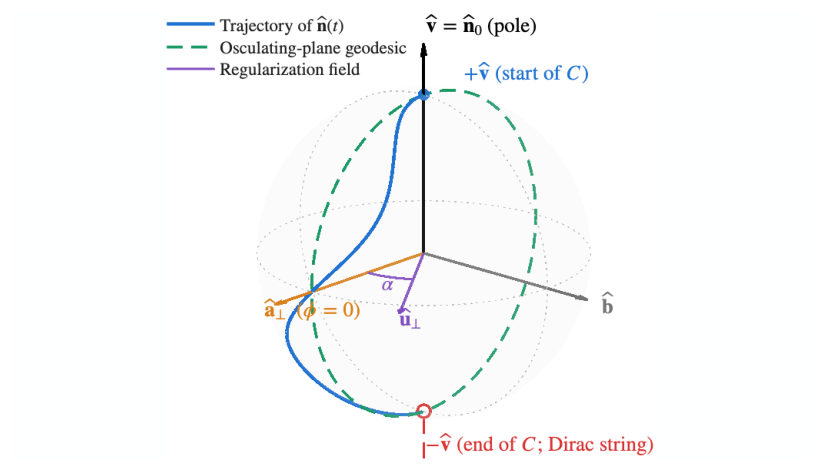
Summary. This paper addresses the ambiguity in calculating the geometric phase for quantum systems whose control parameters pass through a degeneracy point, leading to an open path on the Bloch sphere. By introducing a regularization technique, the authors prove that the physical phase is uniquely determined by closing the path along the great circle in the osculating plane. This establishes a computable selection rule that unifies several theoretical approaches.
Why it may be interesting. This work provides a rigorous, computable prescription for calculating geometric phases in open quantum systems that encounter degeneracies, resolving a long-standing ambiguity in the literature.
Main problem. The paper resolves the ambiguity in defining the geometric phase accumulated by a quantum system whose control field sweeps through a level degeneracy, resulting in an open path on the Bloch sphere.
Main result. A unique, physically determined geodesic closure is selected: the great circle lying in the osculating plane at the degeneracy, which yields a solid angle $\Omega[C] + 2\alpha$ when regularized.
Method. The authors use coordinate-free monopole connections and regularization techniques by introducing a small displacement $\epsilon\hat{u}$ to close the open path, allowing the solid angle to be calculated via Stokes' theorem.
Model / system. The system is modeled by a two-level Hamiltonian $H(t) = -d(t) \cdot \sigma$, where the control vector $d(t)$ sweeps through the origin (level degeneracy) on the Bloch sphere.
Key observables. Geometric phase ($\gamma_g$), enclosed solid angle ($\Omega$), and the Uhlmann phase ($\gamma_U$).
Important parameters / regimes. The regularization parameter $\alpha$, which measures the deviation from the osculating plane closure.
Assumptions / limitations. The analysis assumes a transversal crossing at the degeneracy point and relies on the pure-state limit of the finite-temperature Uhlmann phase to select the correct closure.
Figures summary. Figure 1 illustrates the setup, showing the open curve, the base point, the Dirac string, the canonical osculating-plane geodesic, and the regularization deviation $\alpha$.
Paper structure. The paper first establishes the ambiguity of the open-path phase, then introduces the monopole connection and regularization method, deriving the $\Omega(\epsilon\hat{u}) = \Omega[C] + 2\alpha$ relation, and finally confirming the selection rule using the Uhlmann phase limit.
When the control field of a qubit, a polarization state, or a spin-$\tfrac12$ system is swept through a level degeneracy, its direction traces an open curve on the Bloch sphere whose endpoints are antipodal, and the geodesic rule for the open-path geometric phase becomes ambiguous: infinitely many geodesics close the path, and different closures enclose different solid angles. We resolve this ambiguity in closed form. A coordinate-free monopole connection defines the open-path solid angle $Ω[C]$ intrinsically, and displacing the degeneracy by $ε\uhat$ closes the path with enclosed solid angle $Ω(ε\uhat)=Ω[C]+2α+O(ε)$, where $α$ is the azimuth of the transverse part of $\uhat$ measured from the principal normal of the control curve at the crossing. The identity between geometric phase and enclosed solid angle therefore holds for exactly one closing geodesic---the great circle in the osculating plane ($α=0$)---supplied by the curvature at the degeneracy. Berry's $π$ invariant under reversal of the displacement and the values $\pmπ/2$ under a reflection symmetry follow as corollaries, and the pure-state limit of the finite-temperature Uhlmann phase selects the osculating-plane closure automatically, turning the heuristic closing rules of the open-path literature into a computable prescription.
Authors: Hedwig Keller, Mierk Schwabe, Veronika Eyring
Type: both · Category: numerical methods · PDF: https://arxiv.org/pdf/2608.20076v1
Analysis basis: full PDF text, analyzed in chunks
Topic relevance: QC/QI experiment 2/5 · methods for driven-dissipative 2/5
Summary. This paper develops 'shadow models' to allow QML models, used for cloud cover parametrization, to be efficiently coupled to classical climate simulations despite limited quantum hardware. The authors compare classical interpolation techniques against approximating the quantum model using a truncated Fourier series. The key finding is that these shadow models can effectively mitigate the detrimental effects of finite sampling noise, paving a path for near-term quantum-classical integration.
Why it may be interesting. The focus on developing classical surrogates (shadow models) for quantum computations is highly relevant for bridging theoretical quantum algorithms with practical, resource-constrained classical simulations in fields like atmospheric science.
Main problem. The paper addresses the challenge of integrating Quantum Machine Learning (QML) models, trained on quantum hardware, into classical applications like climate modeling despite current hardware limitations and associated noise.
Main result. Shadow models provide an efficient, classical surrogate for QML models, and the use of truncated quantum Fourier series can mitigate the effects of finite sampling noise.
Method. The authors compare classical interpolation methods (full vs. sparse grids) against approximating the quantum model using a partial Fourier series representation, focusing on constructing 'shadow' models without explicit retraining.
Model / system. The primary model is a QML model designed for cloud cover parametrization, which is approximated by a partial Fourier series. The analysis is tested on the superconducting qubit system Euro-Q-Exa.
Key observables. Mean Squared Error (MSE) on test data, the ratio of MSE between interpolants and the true model, and the variance reduction achieved by truncating Fourier coefficients.
Important parameters / regimes. Finite sampling noise (shot noise), the number of samples ($N_s$), the size of the frequency spectrum ($|\Omega|$), and the number of grid points used for interpolation.
Assumptions / limitations. The work assumes that the error mitigation benefit from Fourier truncation outweighs the introduced truncation error, and it notes the difficulty in separating hardware noise effects from system calibration errors.
Figures summary. Figures compare the MSE of QML models versus various interpolants (full/sparse grid) as a function of grid points, and plot the ratio of these MSEs to assess convergence rates.
Paper structure. The paper introduces the need for shadow models for QML integration, details the Fourier-based and interpolation approaches for constructing these classical surrogates, compares their performance under finite sampling noise, and tests these methods on a real quantum hardware platform.
Quantum computing is a quickly growing field that is promising various advantages compared to conventional computing. However, currently stand-alone quantum applications are scarce and hybrid (quantum-classical) computing is needed, especially in quantum machine learning (QML). Due to current limitations of quantum computing hardware and the coupling between HPC and quantum devices, integrating a trained (QML) model in classical applications is challenging. In this case, it is helpful to couple so-called shadows of the QML model instead, i.e., classical models that imitate the input-output relations of QML models such that quantum resources are only needed during the training stage. Here we consider constructive shadowing processes without an explicit training or regression stage to avoid rendering the QML model redundant, and apply them to a previously developed QML model for cloud cover [1] to allow for an efficient coupling to a climate model. We compare classical interpolation methods to an approximation of the quantum Fourier model, the representation of the circuit as a partial Fourier series. The encoding strategy in [1] allows the use of the discrete Fourier transform to efficiently reconstruct the circuits classically. Truncating the partial Fourier series further reduces the size of the shadow models. Both methods have the effect of mitigating finite sampling noise under certain conditions, which yields a motivation to use shadow models also beyond the era of limited hardware availability. Further, we compute the shadow models on the quantum system Euro-Q-Exa, based on the IQM Radiance system with superconducting qubits, where error mitigating effects can also be observed, albeit it is still difficult to distinguish them from errors connected to the calibration of the system.
Authors: Alexei Kaltchenko, Gurnivaj Tiwana
Type: both · Category: quantum information and computing · PDF: https://arxiv.org/pdf/2608.19707v1
Analysis basis: full PDF text, analyzed in chunks
Topic relevance: QC/QI experiment 2/5 · quantum measurements 1/5
Summary. This paper investigates whether advanced countermeasures can prevent ChatGPT from solving introductory quantum computing homework assignments built in Qiskit. The study found that ChatGPT successfully completed all tested assignments, suggesting that passing an execution-based homework is insufficient proof of independent understanding. The authors recommend supplementing automated grading with oral defenses and modification tasks.
Why it may be interesting. While not directly focused on AMO Hamiltonian dynamics, the rigorous testing of quantum algorithms (QFT, DJ) and the discussion of execution fidelity on real hardware touches upon the practical implementation challenges relevant to quantum information science.
Main problem. The study assesses the vulnerability of introductory quantum software assignments (using Qiskit) to completion by Large Language Models (LLMs) like ChatGPT, while maintaining the requirement for genuine student engagement.
Main result. ChatGPT successfully completed all tested assignments, demonstrating 'zero observed ChatGPT-resiliency' even when advanced countermeasures like personalization and hidden references were implemented.
Method. The authors tested three distinct, execution-based Qiskit homework packages across 150 separate ChatGPT sessions, using a combination of deterministic scaffolding and machine-readable grading layers.
Model / system. The work utilizes quantum circuits implemented via Qiskit, covering concepts such as seeded basis-state circuits, Quantum Fourier Transform (QFT), and Deutsch-Jozsa circuits, executed on simulators and real hardware.
Key observables. Successful execution and passing of the corresponding grader for the final artifact, and the measured 'ChatGPT-resiliency' ($R_a$).
Important parameters / regimes. The study is limited to three fixed, introductory undergraduate-level instances and does not test generalization across all possible seeds or task structures.
Assumptions / limitations. The primary limitation is that the results only apply to the specific, fixed, execution-oriented designs tested, not to all possible Qiskit assessments.
Figures summary. Table I summarizes the three implemented Qiskit assignment packages and the specific AI-deterrence/grading layers used for each. Table II summarizes the fixed-instance trial series (50 sessions per HW).
Paper structure. The paper establishes the problem of AI assessment vulnerability, details the development of three countermeasure-laden packages (HW1, HW2, HW3), presents the results showing universal success by ChatGPT, and concludes by recommending human-centric assessment methods.
Generative AI creates an assessment challenge in quantum software education: a student can provide a homework notebook to ChatGPT and request a completed submission. This study examined whether introductory Qiskit homework could remain autogradable while requiring students to run, review, and discuss results rather than banning AI. Three packages were tested: seeded basis-state circuits with bit flips and customized measurement mappings; Quantum Fourier Transform followed by inverse-transform recovery; and seeded Deutsch-Jozsa with customized oracle masks. The designs used personalization, simulator execution, JSON submissions, hidden references, circuit metrics, reflections, and optional IBM Quantum execution. For each package, one student-visible instance was tested in 50 separate ChatGPT sessions, yielding 150 sessions overall. Every final artifact was executed and passed its grader. Nine sessions were fully archived; none required operator code changes or correction of quantum logic. Under the study's operational definition, each tested instance had zero observed ChatGPT-resiliency. Seeds changed parameters rather than task structure, expected results remained derivable from visible assignment logic, scaffolding exposed key solution steps, and hidden grading verified output consistency without establishing independent authorship or understanding. Because one instance was repeated for each package, the results do not establish solvability for every seed or possible Qiskit assessment. The tested personalized, execution-oriented take-home designs therefore did not prevent successful completion under a minimally engaged-student workflow. Correct artifacts should be complemented by direct assessment through supervised modification, oral defense, prediction, and transfer tasks.
Authors: Marta Losada, Daniel Faílde, Andrés Gómez
Type: both · Category: quantum information and computing · PDF: https://arxiv.org/pdf/2608.19824v1
Analysis basis: full PDF text, analyzed in chunks
Topic relevance: QC/QI experiment 2/5 · analog quantum simulation 1/5
Summary. This work investigates how to efficiently run the Variational Quantum Eigensolver (VQE) across multiple, noisy quantum processors. By comparing shot-level, circuit-level, and parameter-candidate distribution strategies, the authors determine that the best approach is highly dependent on the optimization algorithm used. The findings offer critical guidelines for scaling VQE computations on real-world, heterogeneous quantum hardware.
Why it may be interesting. It provides a crucial, practical guide for quantum algorithm implementation, detailing how resource management (parallelization) must adapt to the physical constraints (noise and heterogeneity) of near-term quantum hardware.
Main problem. The paper evaluates the Variational Quantum Eigensolver (VQE) in realistic, distributed Noisy Intermediate-Scale Quantum (NISQ) environments, focusing on how heterogeneous noise affects different parallelization strategies.
Main result. The optimal parallelization strategy depends heavily on the quantum optimizer used; Differential Evolution (DE) shows resilience to noise, while Quantum Natural Gradient (QNG) is highly sensitive to backend heterogeneity.
Method. The authors compare three 'embarrassingly parallel' workflows—shot-level, circuit-level, and parameter-candidate level—using the CUNQA platform to manage task distribution across emulated virtual QPUs.
Model / system. The target Hamiltonian is the one-dimensional Transverse Field Ising Model (TFIM) ($H = -\sum_i J X_i Z_i Z_{i+1} - \sum_i \Gamma X_i$). The computation is performed using VQE and various optimizers (COBYLA, QNG, DE).
Key observables. Speedup, parallel efficiency, convergence path relative to exact ground-state energy, and final energy estimate.
Important parameters / regimes. The number of spins ($N=6$), the noise profile heterogeneity across virtual QPUs, and the specific distribution strategy employed.
Assumptions / limitations. The analysis assumes that the optimizer proposes tasks, which are then distributed and gathered classically, and that the simulation uses Qiskit AerSimulator.
Figures summary. Figures illustrate the three distribution workflows (shot, circuit, candidate) and compare optimization paths and speedup/efficiency across different numbers of noisy virtual QPUs.
Paper structure. The paper systematically compares the three distribution levels (shot-, circuit-, and candidate-level) for VQE workloads, analyzing convergence and efficiency metrics under varying degrees of backend noise and resource scaling.
Variational Quantum Eigensolver requires many circuit executions, making it ideal for distributed parallelization. However, heterogeneous noise in NISQ devices can skew results and efficiency. Using the CUNQA platform for emulation of virtual QPUs, we evaluate three embarrassingly parallelization strategies (shot-level, circuit-level for gradients and observables and candidate level for population-based optimizers) across metrics like speedup and accuracy.
Authors: R. Surmay, V. A. Leonov, E. A. Vashukevich
Type: theory · Category: quantum information and computing · PDF: https://arxiv.org/pdf/2608.19945v1
Analysis basis: full PDF text, analyzed in chunks
Topic relevance: analog quantum simulation 2/5 · interference shaping light 1/5
Summary. This paper theoretically analyzes how to generate arbitrary entangling gates between two qudits—one in light and one in atomic spin coherence—using the light-atomic Faraday interaction. By employing a QND-Rotation-QND protocol, the authors derive the transformation matrix and quantify the entanglement achievable, showing that the gate structure depends systematically on the qudit dimension $d$. This work advances the understanding of high-dimensional quantum information processing using cavity/atomic platforms.
Why it may be interesting. This work provides a detailed theoretical blueprint for realizing high-dimensional quantum gates using controllable light-matter interactions, which is crucial for scaling up quantum communication and computation protocols.
Main problem. The paper investigates the feasibility and characterization of entangling operations between two qudits of arbitrary dimension using light-atomic interactions.
Main result. It demonstrates that the light-atomic Faraday interaction protocol can generate a wide range of entangling gates, which are characterized by their dependence on the qudit dimension $d$ and can be represented by rational powers of the $d$-dimensional SWAP gate.
Method. The analysis uses the Bogoliubov transformation to model the evolution governed by the light-atomic Faraday Hamiltonian, followed by deriving the transformation matrix $U_d$ and calculating its entangling power using Schmidt decomposition.
Model / system. The system consists of two qudits: one encoded in the spatial modes (OAM) of an optical field, and the other in the collective spin coherence of an atomic ensemble. The interaction is modeled by the light-atomic Faraday interaction Hamiltonian.
Key observables. The generated two-qudit transformation matrix $U_d$, the entangling power $e_p$, and the probability amplitudes for implementing specific gates like $ ext{CNOT}_d$.
Important parameters / regimes. The dimension $d$ of the qudits, and the coupling parameters $\mu$ and $ u$ derived from the interaction strengths.
Assumptions / limitations. The analysis relies on the Holstein–Primakoff approximation for the Hamiltonian and assumes an 'equal-weight state' to establish lower bounds on probability amplitudes.
Paper structure. The paper first analyzes the two-qubit case using a QND-Rotation-QND protocol, establishing unitarity constraints. It then generalizes the method to qudits, deriving the transformation matrix $ ilde{U}_d$ and calculating the entangling power $e_p$ in terms of $d$. Finally, it discusses the realization of specific gates like $ ext{CNOT}_d$ and analyzes parameter constraints.
The paper investigates entangling operations acting on two qudits of arbitrary dimension, with one encoded in the states of a spatially multimode optical field, the other in those of atomic collective spin coherence, both carrying orbital angular momentum (OAM). We demonstrate the generation of a wide range of entangling operations within a protocol consisting of two Faraday interactions and a rotation of atomic and light quadratures between them. All generated gates can be represented as rational powers of the d-dimensional gate $SWAP^α_d$. The probabilities of two-qudit transformations are calculated for various dimensions of the logical space and for different entangling powers of the logical gates.
Authors: Benjamin Bobell, Mert Okyay, Rahul Nandkishore
Type: theory · Category: statistical mechanics · PDF: https://arxiv.org/pdf/2608.19320v1
Analysis basis: full PDF text, analyzed in chunks
Topic relevance: quantum measurements 2/5 · Keldysh / 2PI / non-Gaussian methods 1/5
Summary. This paper introduces the Rényi-Jarzynski Equality, a generalized fluctuation theorem that links non-equilibrium work to free energy changes using the Rényi $k$-divergence. It overcomes measurement limitations by conditioning the equality on bath observable outcomes. The resulting divergence acts as a tunable cost function, enabling the minimization of bath drift in quantum optimal control and revealing entanglement generation requirements.
Why it may be interesting. This work provides a powerful, generalized thermodynamic constraint (the RJE) that moves beyond standard fluctuation theorems by incorporating the Rényi divergence, making it highly relevant for designing robust quantum control protocols.
Main problem. To derive a non-destructive quantum Jarzynski equality (Rényi-Jarzynski Equality) that links nonequilibrium work to equilibrium free energy changes, overcoming limitations of standard quantum formulations.
Main result. The RJE quantifies bath drift using the Rényi $k$-divergence, providing a tunable cost function for quantum optimal control problems.
Method. The authors employ a resource-theoretic approach, deriving fluctuation theorems conditioned on arbitrary bath observable outcomes, leading to the generalized Rényi-Jarzynski equality.
Model / system. The analysis uses a tripartite setup (System-Bath-Weight) and extends to toy models involving $d$-state qudits, analyzing the dynamics under non-adiabatic driving.
Key observables. Rényi $k$-divergence ($D_k(P_0||P_f)$), Bath Drift, Work ($W$), and Free Energy Change ($\Delta F_S$).
Important parameters / regimes. The Rényi order $k$, the bath dimension $d$, and the drive parameters ($ heta$).
Assumptions / limitations. The derivation is conditioned on the outcomes of an arbitrary bath observable, and some analyses rely on quasi-classical approximations or dropping coherence terms when calculating bath marginals.
Figures summary. Not specified, but the text describes the derivation of several numbered equations (1) through (18) representing core results.
Paper structure. The paper progresses from establishing the general non-destructive quantum Jarzynski equality, to generalizing this to $k$-th moments and the Rényi divergence, and finally applying this metric to analyze optimal control problems in toy qudit models.
The Jarzynski equality provides a strict link between nonequilibrium work and equilibrium free energy changes. Its typical quantum formulations, however, rely on measurement protocols that destroy coherence. In this Letter, we use the resource-theoretic approach to derive a non-destructive quantum Jarzynski equality conditioned on the outcomes of an arbitrary bath observable. This yields the Rényi-Jarzynski equality, which quantifies a finite bath's drift from equilibrium under a non-adiabatic drive via the Rényi $k$-divergence. We further demonstrate that the Rényi-Jarzynski equality provides a tunable cost function for quantum optimal control problems where minimizing bath drift is desired, such as state preparation and gate design, enabling the minimization of cross-talk in finite quantum systems. Our toy model exhibits a transition between competing minima for some critical value of $k$, illustrating how the Rényi order tunes sensitivity to different regions of a bath distribution. Strikingly, when drive parameters vary across bath energy levels, minimizing bath drift requires generating system-bath entanglement.
Authors: Matias Karjula, Teemu Ojanen, Tapio Ala-Nissila, Moein N. Ivaki
Type: theory · Category: quantum information and computing · PDF: https://arxiv.org/pdf/2608.20155v1
Analysis basis: full PDF text, analyzed in chunks
Topic relevance: analog quantum simulation 2/5 · quantum measurements 1/5
Summary. This paper analyzes how usable computational structure emerges from complex quantum dynamics by studying tunable quantum circuits. It introduces 'Response Capacity' as a key metric that quantifies the system's information processing power. The findings reveal a distinct intermediate 'learning phase' where quantum resources are optimally accessible before the system enters a chaotic regime.
Why it may be interesting. It provides a concrete, measurable diagnostic (Response Capacity) linking fundamental concepts like spectral properties and quantum chaos to practical measures of computational utility in quantum circuits.
Main problem. The paper investigates the relationship between globally generated quantum complexity and the structure accessible to quantum subsystems, treating complexity as a quantifiable computational resource.
Main result. It identifies an intermediate 'learning phase' preceding quantum chaos, characterized by pronounced spectral nonflatness, where the system achieves optimal, usable information processing capacity.
Method. The analysis employs theoretical derivations of response capacity bounds and studies the behavior of quantum circuits across different dynamical regimes.
Model / system. The study uses a family of minimally tunable postvariational quantum circuits, specifically modeled as a one-dimensional brickwork quantum circuit in a ring geometry.
Key observables. Spectral nonflatness, metrological susceptibility (Quantum Fisher Information, $F_\phi^Q$), and the derived Response Capacity ($\mathcal{R}_{\hat{O}_R}$).
Important parameters / regimes. System size ($N$), tuning parameter ($ heta$), and the transition between weakly entangling, intermediate 'learning', and quantum chaotic limits.
Assumptions / limitations. The derived response bound is noted as a necessary, but not generally sufficient, condition for average learnability.
Figures summary. Figure 1 illustrates the rise and fall of subsystem response in a tunable random quantum circuit, showing the transition from weakly entangling to chaotic regimes.
Paper structure. The paper develops diagnostics based on spectral nonflatness and metrological susceptibility to quantify usable subsystem complexity, demonstrating how this capacity evolves as the system moves through different dynamical regimes.
What is the relation between subsystem quantum complexity and the emergence of computationally useful structure? We address this by studying a family of minimally tunable postvariational quantum circuits, and show how spectral nonflatness and metrological response directly control the ensemble-typical information processing power. This unveils an intermediate "learning phase" that precedes the onset of quantum chaos, characterized by pronounced nonflatness and sensitivity of readout states. The optimal information processing capacity improves with system size, while deep scrambling suppresses observable response. The results reveal how such features of random quantum dynamics can be viewed as computational resources for scalable nonlinear computation.
Authors: Zhuo Wang, Zheng Liu, Shuo Zou, Hua-Xun Li, Jin-Xin Hu, Zhuolun Qiu, Ze Wang, Jiamin Gong, Lucheng Wei, Kangjian Luo, Hai Zeng, Meng Zhang, Chao Dong, Chuanyin Xi, Junfeng Wang, Jiakun Fang, Xiaotao Han, Guang-Han Cao, Liang Li, Yongkang Luo
Type: both · Category: strongly correlated electrons · PDF: https://arxiv.org/pdf/2608.19856v1
Analysis basis: full PDF text, analyzed in chunks
Topic relevance: quantum measurements 2/5 · analog quantum simulation 1/5
Summary. This work determines the magnetic structure of CeNiAsO, identifying it as a 'tilted p-wave magnet' based on NQR/NMR measurements. The study establishes a commensurate, non-collinear antiferromagnetic order characterized by a small out-of-plane moment. By combining spectroscopy and transport measurements, the authors provide strong evidence for this exotic magnetic state in a heavy-fermion compound.
Why it may be interesting. The detailed characterization of the magnetic symmetry breaking and the resulting spin-orbit coupling effects, particularly the enhancement of spin splitting, provides a rich playground for understanding emergent quantum phenomena in strongly correlated systems.
Main problem. The magnetic structure of CeNiAsO, a candidate for a correlated p-wave magnet, is difficult to determine due to its unexpectedly small ordered magnetic moments.
Main result. The study reveals a commensurate antiferromagnetic order with a small, non-collinear, out-of-plane moment, characterizing the material as a 'tilted p-wave magnet'.
Method. The research combines high-sensitivity $^{75} ext{As}$ NQR/NMR experiments to probe local internal fields with DFT+U calculations to model electronic structure and anomalous transport.
Model / system. The system is CeNiAsO, which exhibits two sequential antiferromagnetic transitions. The magnetic state is modeled as a tilted-coplanar commensurate AFM order, analyzed using a total Hamiltonian incorporating quadrupole and interaction terms.
Key observables. Internal magnetic field ($\mathbf{B}_{ ext{int}}$), NQR/NMR peak splitting, Anomalous Hall Effect ($ ho_{Axy}$), and spin splitting ($\Delta S$).
Important parameters / regimes. Small out-of-plane moment ($m_z \approx 0.05 \mu_B$), $\mathbf{B}_{ ext{int}} \approx 0.213 ext{ T}$, and the canting angle $ heta_{ ext{int}} \approx 44^\circ$.
Assumptions / limitations. The analysis assumes the magnetic structure is dominated by the commensurate AFM phase and that the internal field can be accurately determined via hyperfine coupling measurements.
Figures summary. Figures show NQR/NMR spectra fitting the internal field orientation ($ heta_{ ext{int}} \approx 44^\circ$), the emergence of AHE loops in $ ho_{yx}$ at low T, and calculations confirming the coplanar nature of the magnetic moments.
Paper structure. The paper proceeds by using NQR/NMR to pinpoint the internal field and magnetic canting angle, followed by DFT+U calculations to confirm the electronic consequences, and finally analyzing the AHE in transport measurements to solidify the p-wave magnetic character.
The unexpectedly small ordered moments of CeNiAsO, a candidate for correlated $p$-wave magnet, have posed a serious challenge to the precise determination of its magnetic structure, hindering the understanding of its fundamental properties. By leveraging the high sensitivity to local internal fields, our $^{75}$As nuclear quadrupole / magnetic resonance experiments reveal a commensurate antiferromagnetic order with a small out-of-plane moment $m_z\approx0.05$ $μ_{\mathrm{B}}$. This tilted magnetic configuration not only rotates the spin polarization axis away from the crystallographic $\mathbf{c}$-axis, but also enhances the non-relativistic spin splitting. We refer to this rare paradigm as a \textit{tilted $p$-wave magnet}.
Authors: Daniel Galviz
Type: theory · Category: strongly correlated electrons · PDF: https://arxiv.org/pdf/2608.20330v1
Analysis basis: full PDF text, analyzed in chunks
Topic relevance: analog quantum simulation 2/5 · quantum measurements 1/5
Summary. This paper establishes that for Abelian topological orders, the information encoded in torus Berry matrices is sufficient to uniquely determine the entire topological quantum field theory across all genera. By linking the Berry holonomy to the mapping-class group representation, the authors provide a robust, numerically verifiable method to characterize exotic quantum phases like fractional quantum Hall states.
Why it may be interesting. This work provides a powerful, experimentally verifiable diagnostic tool for characterizing exotic topological phases of matter, linking abstract mathematical structures (TQFTs) directly to measurable quantities (Berry phases) in condensed matter systems.
Main problem. The core problem is determining if the topological order of an Abelian Chern-Simons theory can be fully reconstructed from measurements of torus Berry matrices, even when those measurements are subject to finite errors.
Main result. The authors prove that for Abelian Chern-Simons topological orders, the torus Berry matrices are sufficient to determine the entire all-genus extended TQFT, and this reconstruction is stable against small measurement errors.
Method. The work combines geometric quantization techniques (involving half-forms and BKS maps) with algebraic reconstruction methods, specifically using nearest-row decoding on measured Berry data to recover the underlying finite quadratic module (G, q).
Model / system. The study focuses on Abelian Chern-Simons topological orders, which are relevant to physical systems like Abelian fractional quantum Hall states and spin-liquid phases described by even-lattice Chern-Simons theories.
Key observables. Torus Berry matrices (S, T), the finite quadratic module (G, q), and the projective Berry holonomy.
Important parameters / regimes. The error bound $\delta < 21.96\%$ is critical for the successful reconstruction of the fusion algebra.
Assumptions / limitations. The reconstruction is strictly proven for Abelian theories; the analysis also relies on fixing a topological basis and assuming the theory is Abelian.
Figures summary. Figure 1 illustrates the 'Berry tomography map,' demonstrating how torus Berry transport reconstructs the quadratic module (G, q), which in turn fixes the all-genus extended theory.
Paper structure. The paper proceeds by first establishing the mathematical link between the projective Berry holonomy and the mapping-class-group representation of the TQFT. It then tackles the reconstruction problem by showing that the measured torus data uniquely determines the algebraic structure (G, q), culminating in the proof that this structure fixes the entire TQFT.
We show that for Abelian Chern-Simons topological orders, torus Berry matrices determine the all-genus extended TQFT. We identify the topological part of the projective Berry holonomy under metric deformations with the mapping-class-group representation of the Abelian Chern-Simons TQFT and prove that the normalized torus data reconstruct its finite quadratic module $(G,q)$. Recent work showed that $(G,q)$ classifies the extended theory up to symmetric monoidal natural isomorphism, then genus-one data determine the all-genus theory without choosing a $K$-matrix presentation. We also prove that, for normalized character row errors $δ<21.96$%, nearest-row decoding recovers the Abelian fusion algebra independently of the number of anyons. The result applies to Abelian fractional quantum Hall and spin-liquid phases described by even-lattice Chern-Simons theories.
← Index · ← Previous · Next →